Tri-Mode Mouse
概述
本文档旨在指导用户快速配置开发环境，包括编译 SDK，烧录固件，升级固件及抓取 Log。用户可以下载 SDK 中的测试文件，确保在 EVB 或样机鼠标上可以正常运作，并与开发环境兼容且具备相应功能。
本文还介绍 Realtek BLE/2.4G/USB 三模鼠标（下文简称三模鼠标）的参考方案，包括功能特性，系统架构，三种模式下的数据处理和发送，各个外设模块的配置和使用等。
实用案例
三模鼠标与主机端（Host）通讯支持包含 BLE/2.4G/USB 三种不同的通讯模式。
BLE 无线模式
RTL87x2G 鼠标可以与主机端通过标准的 BLE 蓝牙通信。

BLE 无线模式结构框图
2.4G 无线模式
RTL87x2G 鼠标搭配 RTL87x2G 接收器 (Dongle) 进行 2.4G 无线通信，接收器通过 USB 与主机端通信。
{kind=link}
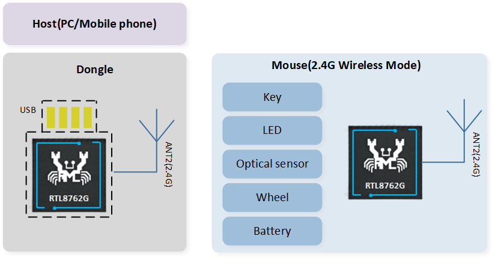
2.4G 无线模式结构框图
USB 有线模式
RTL87x2G 鼠标可以直接与主机端通过 USB 直连通信，支持 Full/High Speed USB。
{kind=link}
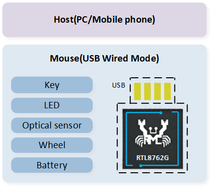
USB 模式结构框图
支持功能
支持 BLE/2.4G/USB 三种通信模式
BLE/2.4G/USB 三种模式的最高上报率为 125Hz/4KHz/8KHz
支持 Full/High speed USB
支持 GPIO 和 Keyscan 按键，Keyscan 最多可扩展到 240 个按键 (12x20)
支持硬件 QDEC
支持 PWM 输出控制 LED
支持电量检测
支持基于 USB 的 DFU 升级
环境需求
RTL87x2G EVB
RTL87x2G 三模鼠标样机
ARM Keil MDK: https://developer.arm.com (uVision V5.36, ARMCC: V6.17)
MPTool_kits:
SDK-MOUSE-vx.x.x.x\tools\MPToolDebugAnalyzer:
SDK-MOUSE-vx.x.x.x\tools\DebugAnalyzerCFUDownloadTool:
SDK-MOUSE-vx.x.x.x\tools\CFUDownloadToolMPPackTool:
SDK-MOUSE-vx.x.x.x\tools\MPTool\MPTool\tools\MPPackTool
硬件环境需求说明
Realtek 提供两种硬件开发环境，用户可选其一进行三模鼠标 SDK 开发。
工具需求说明
在 SDK 的 \tools 目录下，安装包是 .zip 格式的压缩包，用户需要对其解压。
ARM Keil MDK
SDK 中所有的应用能够通过 Keil Microcontroller Development Kit (MDK) 编译以及使用。所以在进行软件开发之前，要先取得并安装 Keil。有关 Keil 的更多信息请访问 http://www.keil.com。
Realtek 使用的工具链版本信息如 Keil 版本信息所示。为避免产生 ROM 可执行程序和应用之间的兼容性问题，建议使用 uVision V5.36 版本或者更新的版本，并 将 ARMCLANG 默认编译器配置成 compiler 6.17，如 Keil 参数配置所示。
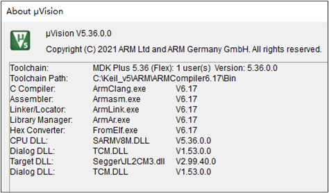
Keil 版本信息

Keil 参数配置
MP Tool
用户烧录程序请参考 MP Tool 章节，烧录文件路径为 SDK-MOUSE-vx.x.x.x\download_images。
备注
当选择 Config File 时，注意文件前缀：log_close 表示设备在工作模式没有 log 输出，log_open 表示在工作模式下设备的 log 会同步输出，如 Config File Log 前缀所示。
有关 MP Tool 的更多使用说明，请参阅 SDK 工具目录下的用户指南，也可以前往 RealMCU 平台获取相应工具，并查阅提供的文档。
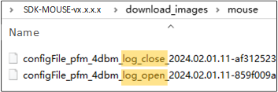
Config File Log 前缀
DebugAnalyzer
用户抓取和解析 SoC Log 请参考 DebugAnalyzer介绍。
备注
确保 .trace 文件与当前 SoC 运行代码匹配。开发过程中如遇到问题，请提供
DebugAnalyzer\DataFile路径下的 .log & .bin & .cfa 文件以及 .trace 文件，以便 Realtek 解析定位问题。有关 DebugAnalyzer 的更多使用说明，请参阅 SDK 工具目录下的用户指南，也可以前往 RealMCU 平台获取相应工具，并查阅提供的文档。
MPPack Tool
- 用户可以通过 MPPackTool 对设备升级文件进行打包处理。路径:
SDK-MOUSE-vx.x.x.x \tools\MPTool\MPTool\tools\MPPackTool，如下图所示。
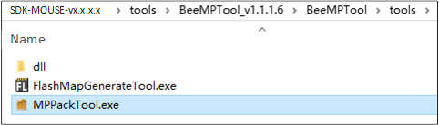
MPPackTool.exe
双击运行
MPPackTool.exe， IC Type 选择 RTL87x2G_VB，选择 ForCFU，点击 Browse，选择需要升级的文件，以Bank0 Boot Patch Image和Bank0 BT Stack Patch Image为例，如下图所示。
{kind=link}
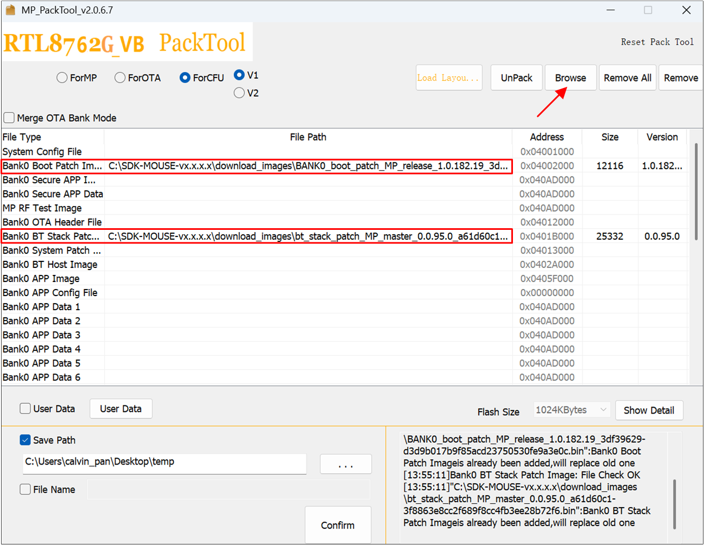
MPPackTool 界面
提示
待升级的文件大小不能超过设置的 OTA Tmp 区大小（参考工程里的 flash_map.h），如果待升级总文件的大小超出 OTA Tmp 区，需要分批次打包，然后逐包升级。由于 Patch，Stack 等文件很少更新，用户一般只需要单独打包 APP Image 即可。
- 文件加载完成后，点击 Confirm，会生成
ImaPacketFile.offer.bin和ImgPacketFile.payload.bin两份文件，如下图所示。路径:SDK-MOUSE-vx.x.x.x\tools\MPTool_x.x.x.x\MPTool\tools
{kind=link}
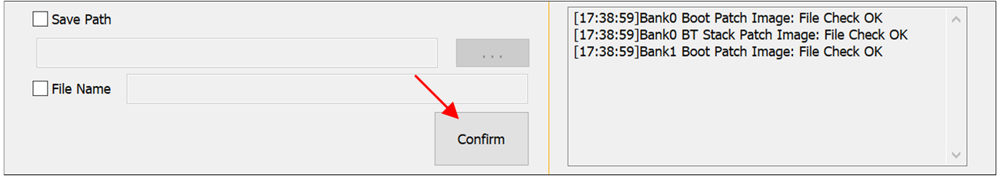
MPPackTool 文件打包确认
备注
勾选 save patch，可以选择生成 CFU 文件的保存目录，不勾选默认存在根目录下。
打包量产烧录文件以及其他更详细的使用说明，请参阅 SDK 工具目录下的用户指南，也可以前往 RealMCU 平台获取相应工具，并查阅提供的文档。
CFUDownloadTool
- 用户可以通过 CFUDownloadTool 对设备进行程序升级。路径:
SDK-MOUSE-vx.x.x.x\tools\CFUDownloadTool，软件版本不低于 V2.0.2.0，如下图所示。

CFUDownloadTool
打开
CFUTOOLSettings.ini文件，对升级设备进行参数设置，如下所示。RTL87x2G 升级方式采用 CFU_VIA_USB_HID
Mouse：Vid=0x0BDA，Pid=0x4762
Dongle：Vid=0x0BDA，Pid=0x4762
[CFU_VIA_USB_HID]
Vid=0x0bda
Pid=0x4762
UsagePage=0xff0b
UsageTlc=0x0104
[CFU_EARBUD_VIA_BT_HID]
Vid=0x005d
Pid=
UsagePage=0xff0b
UsageTlc=0x0104
[CFU_EARBUD_VIA_DONGLE]
Vid=0x0bda
Pid=0x4762
UsagePage=0xff07
UsageTlc=0x0212
[ICTypeSelect]
TYPE=1
[CFUTypeSelect]
Type=0
[MainSetting]
ImageDir=SDK-MOUSE-vx.x.x.x\applications\trimode_mouse\proj\mdk\images\app\cfu
TransDelay=0
TransTimeout=200
ForceReset=1
[DEVICE]
SerialNumber=
提示
如果配置的 Vid 和 Pid 与 Mouse/Dongle 设置不一致，CFUDownloadTool 会识别不到设备。
TransDelay 可设置两笔数据包之间的延迟时间。
TransTimeout 可设置 response 超时时间。
通过设置 SerialNumber，可以在 VID、PID 相同时，区分升级的是 dongle 还是 mouse，如果不填写，则代表不区分。
双击运行 CFUDownloadTool.exe，如下图所示。
IC Type 选择: RTL87x2G
CFU Type 选择: CFU via USB HID
{kind=link}
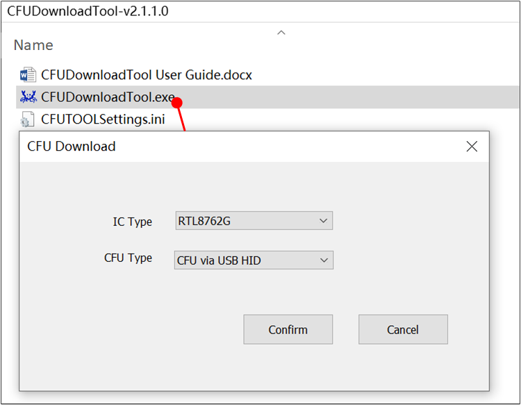
CFU Download Tool 界面
将设备与电脑连接，如果设备识别成功，如下图所示。
“Found 1 device” 在界面右侧显示。
“FwVersion” 表示当前 Mouse/Dongle 的 App Image 版本。
“Current Bank 2” 表示 Single Bank 升级方案（当前仅支持此方案）。
{kind=link}
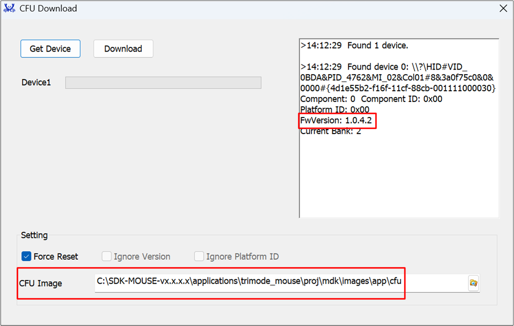
CFU Download Tool 设备识别界面
在 CFU Image 处加载需要升级的文件所在文件夹，如 CFU Download Tool 设备识别界面和 CFU 文件所示。

CFU 文件
点击 Download，进度条会显示当前程序下载进度，下载完成显示“OK”，如 CFU 文件下载成功所示。升级完成后，点击 Get Device，右侧 FwVersion 会显示当前 Image 版本，确保升级成功。
{kind=link}
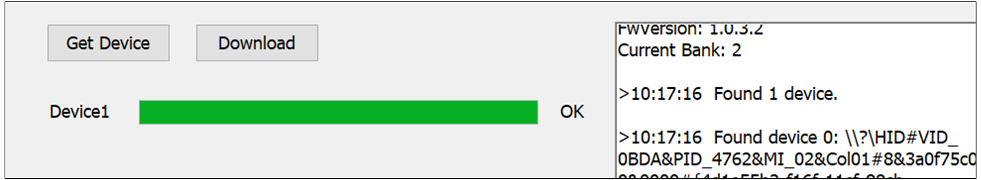
CFU 文件下载成功
硬件连线
RTL87x2G EVB
EVB 评估板提供了用户开发和应用调试的硬件环境。EVB 由主板和子板组成。它有下载模式和工作模式，具体使用请参考 快速入门的硬件开发环境这一章节。
RTL87x2G 三模鼠标

三模鼠标样机引线
下载模式
设备上电前，用户需要先将引出的 Log Pin 接地，设备的 Log Pin、GND Pin 和 FT232 串口转接板的 GND 要共地；引出的 Tx 接串口转接板的 Rx，Rx 接串口转接板的 Tx；VBAT 接 3.3V 电源，串口转接板连接 PC 进行供电。

FT232 串口转接板
进入下载模式后，请参照 MP Tool 进行程序烧录。需注意：
芯片在上电后会读取 Log Pin 的电平信号，如果电平为低，则 Bypass Flash，进入烧录模式，否则运行应用层程序。
因为芯片烧录需要使用 1M 波特率，务必使用 FT232 的串口转接板，否则可能会出现 UART Open Fail 的现象。
Log 接线
设备引出来的 Log Pin 连接串口转接板的 Rx，GND 连接串口转接板的 GND，电脑需要和设备连接进行供电，连接完成后，请参照 DebugAnalyzer 查看 Log 输出。
配置选项
SDK 中 tri-mode mouse 应用默认的主要配置如下表。
宏定义 |
功能描述 |
|---|---|
FEATURE_RAM_CODE |
默认打开，配置是否将所有代码复制到 RAM 中运行。 |
FEAUTRE_SUPPORT_FLASH_2_BIT_MODE |
默认关闭，配置是否跑 flash 2 bit mode。 |
FEATURE_SUPPORT_NO_ACTION_DISCONN |
默认打开，配置是否使能无操作断线机制。 |
FEATURE_SUPPORT_AUTO_PAIR_WHEN_POWER_ON |
默认关闭，配置 mouse 上电时是否自动触发配对。 |
FEATURE_SUPPORT_APP_ACTIVE_FTL_GC |
默认打开，配置是否允许 APP 主动触发 FTL 垃圾回收。 |
FEATURE_SUPPORT_AUTO_TEST |
默认关闭，配置是否使能自动测试。 |
ENABLE_2_4G_LOG |
默认关闭，配置是否打开 2.4G stack log。 |
将在后续章节具体说明。 |
#define MOUSE_GPIO_BUTTON_EN 1
#define MOUSE_KEYSCAN_EN 0
#define MODE_MONITOR_EN 1
#define PAW3395_SENSOR_EN 1
#define AON_QDEC_EN 1
#define GPIO_QDEC_EN 0
#define SUPPORT_LED_INDICATION_FEATURE 1
#define LED_FOR_TEST 0
#define SUPPORT_BAT_DETECT_FEATURE 1
#define DLPS_EN 1
编译和下载
请参阅 快速入门-编译和下载 进行编译和下载。
生成 Flash Map
在 生成 Flash Map 步骤中，开发人员需要根据 SDK-MOUSE-vx.x.x.x\applications\trimode_mouse\proj\flash_map.h 生成 flash_map.ini 和对应的 OTA Header。
生成 System Config File
在 生成 System Config File 步骤中，tx power 等其他设定可根据需要进行配置。
编译 APP image
在 编译 APP image 步骤中，tri-mode mouse SDK keil 工程的路径为: SDK-MOUSE-vx.x.x.x\applications\trimode_mouse\proj\mdk。APP image 由该工程编译得到。
KEIL 编译
工程共有 2 个 target，使用不同的 2.4G 专属协议，请选择正确的 target 进行编译。默认编译不带 “_hopping” 后缀的 target，遵循 sync 协议，具体可参考 2.4G协议文档；而带有 “_hopping” 后缀的 target 使用 sync5 协议通信，可实现扫描波段、跳频功能。
重要
鼠标和 dongle 必须都使用不带 “_hopping” 后缀的 target，或者，都切换到 hopping target，如下图所示，否则无法完成 2.4G 配对。

鼠标 Target 切换
{kind=link}
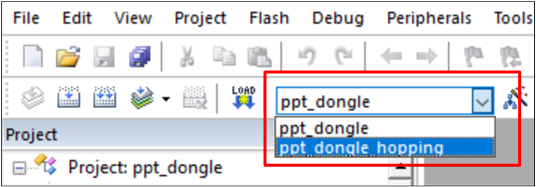
Dongle Target 切换
名称 |
位置 |
|---|---|
Mouse application |
SDK-MOUSE-vx.x.x.x\applications\trimode_mouse |
Dongle application |
SDK-MOUSE-vx.x.x.x\applications\ppt_dongle |
2.4G sync protocol |
SDK-MOUSE-vx.x.x.x\subsys\ppt\sync |
2.4G sync5 protocol |
SDK-MOUSE-vx.x.x.x\subsys\ppt\sync5 |
工程编译成功，在 \bin 文件夹下会同步生成一份带 MP 前缀的 .bin 文件及对应的 .trace 文件，如下图所示，用户可以通过 MPTool 烧录 APP Image，在 DebugAnalyzer 加载 .trace 文件解析 Log。
{kind=link}
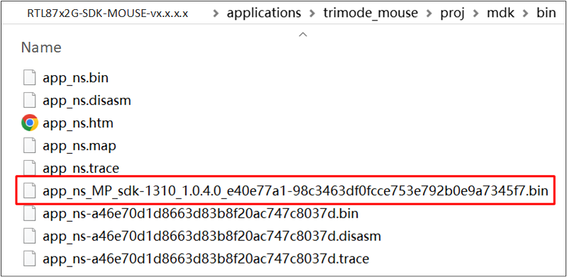
工程编译生成文件
GCC 编译
GCC 编译前，需要参照 快速入门-GCC 这一章节进行正确的环境配置。
完成环境配置后，访问 mingw64\bin，复制 mingw32-make.exe，并将复制的文件重命名为“make.exe”。
用户使用 GCC 编译时，需在 Makefile 文件的位置打开 bash 来执行 make 命令。Makefile 的路径如下：
Dongle 工程:
SDK-MOUSE-vx.x.x.x\applications\ppt_dongle\proj\gcc三模鼠标工程:
SDK-MOUSE-vx.x.x.x\applications\trimode_mouse\proj\gcc
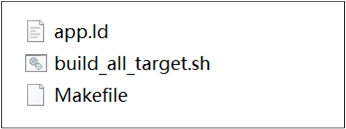
Makefile 路径
- 对于 hopping 工程，用户应在命令行中的 make 命令后定义 ppt_transport=enable。若用户想要生成"非 hopping" 的 image，只需在命令行中输入 make 即可。编译 dongle_hopping 工程和 trimode_mouse_hopping 工程的完整命令如下：
make ppt_transport=enable
编译完成后，\bin 文件夹中会生成一个带有 MP 前缀的 APP image bin 文件和相应的 APP trace 文件。与 KEIL 编译的 image 不同，GCC 生成的 image 文件名中带有“hopping”字样的图像。\bin 文件夹的内容如下图所示。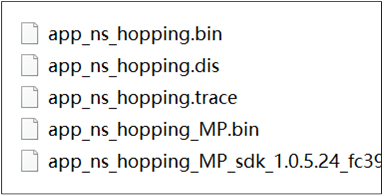
APP Image Bin 路径
如果用户想重新编译 APP image，请确保先执行 make clean 命令。除了在命令行中输入命令外，用户还可以在 gcc 文件夹下直接执行 shell 脚本build_all_target.sh，\bin 文件夹会同时生成两个 target 的 image 和相关文件。\bin 的内容如下图所示。./build_all_target.sh

Shell 脚本执行后的 Bin 目录
{kind=link}
{kind=link}
文件下载
MP Tool 下载
请参照 MP Tool 进行文件下载。
J-Link 下载
J-Link 支持多种连接接口，如 JTAG、SWD 等，因为 SWD 使用的接线更少，所以 RTL87x2G 采用这种接口: RTL87x2G - SWD 接口。另外，J-Link 也可以与多种开发环境和 IDE（如 Keil MDK、IAR Embedded Workbench 等）兼容，Keil 环境设置可以参考 平台概述。
建议使用 J-Link Software v6.44（或更新）版本，更多信息可以参考 快速入门 编译和调试。
RTL87x2G |
SWD |
|---|---|
GND |
GND |
P1_0 |
SWIO |
P1_1 |
SWCK |
VDDIO |
Vterf/3.3V |
测试验证
鼠标样机测试验证
样机代码修改
如果用户使用鼠标样机进行测试验证，可直接编译 APP Image。SDK 默认支持 6 键鼠标的使用，用户还可以在 board.h 中修改宏定义，进而选择 7 键、8 键的鼠标规格。烧录流程请参考 RTL87x2G 三模鼠标。
#define MOUSE_6_KEYS 0
#define MOUSE_7_KEYS 1
#define MOUSE_8_KEYS 2
#define MOUSE_EVB_MODE 3
#define MOUSE_HW_SEL MOUSE_6_KEYS
样机的 Log 抓取和分析
用户可以通过 AnalyzerDebug 来查看 Log 判断程序是否正常运行，请参照 DebugAnalyzer 这一小节查看 Log 输出。以下对 Mouse 端在三种模式下的关键 log 作简要说明。
BLE 模式：
log 显示 GAP stack ready 代表 GAP 层已完成初始化；
搜索到 GAP adv start 代表已开始发广播，可以根据 mouse_start_adv 相关 log 查看当前发的广播类型；
搜索 GAP_AUTHEN_STATE_COMPLETE 相关 log 查看当前配对结果是成功/失败；
log 示例如下。
[APP] !**GAP stack ready ...... [APP] !**[mouse_start_adv] mouse start ADV_UNDIRECT_PAIRING success! [APP] periph_handle_gap_msg: subtype 1 [APP] !**periph_handle_dev_state_evt: init state 1, adv state 1, conn state 0, cause 0x0 [APP] periph_handle_gap_msg: subtype 1 [APP] !**periph_handle_dev_state_evt: init state 1, adv state 2, conn state 0, cause 0x0 [APP] !**GAP adv start ...... [APP] !**[GAP_AUTHEN_STATE_COMPLETE] pairing success
2.4G 模式：
log 显示 ppt_pair 代表开始配对；
ppt_reconnect 代表处于回连状态；
SYNC_EVENT_CONNECTED 代表已经成功连接；
log 示例如下。
[APP] !**ppt_pair [APP] !**sync: speed 125us high 250us, scheme 0-0-0-0, tx cb 0x0 [APP] !**sync: start pair! ...... [APP] !**[ppt_app_sync_event_cb] SYNC_EVENT_PAIRED [APP] !**[ppt_app_sync_event_cb] SYNC_EVENT_CONNECTED ...... [APP] !**sync: lost! [APP] !**sync: disconnected! [APP] !**[ppt_app_sync_event_cb] SYNC_EVENT_CONNECT_LOST [APP] !**ppt_reconnect ...... [APP] !**[ppt_app_sync_event_cb] SYNC_EVENT_CONNECTED
USB 模式：
log 显示 [app_usb_state_change_cb] state: 5 代表 USB 枚举成功；
[app_usb_speed_cb] speed: 相关 log 代表当前 USB speed，0 表示 Full Speed，1 表示 High Speed；
log 示例如下。
[USB] !**dwc_otg_pcd_handle_enum_done_intr: dcfg = 8920000 [USB] !!!dwc_otg_pcd_handle_enum_done_intr: HIGH SPEED [USB] dwc_otg_ep0_activate: dsts.enumspd = 0, dsts.mps = 0x0 [APP] !**[app_usb_speed_cb] speed: 1 [APP] !**High speed ...... [APP] !**[app_usb_state_change_cb] state: 5 [APP] !**[app_usb_state_change_cb] usb waked up
EVB 测试验证
EVB 代码修改
由于代码里的某些功能实现和鼠标样机直接挂钩，例如：LED 显示/按键操作/滚轮操作等，如果烧录到 EVB（非鼠标样机），为保证程序正常运行，请参考以下修改说明：
Mouse 端:
SDK-MOUSE-vx.x.x.x\applications\trimode_mouse\proj\mdk在
board.h中修改以下定义。#define MOUSE_HW_SEL MOUSE_EVB_MODE通过修改
board.h中的 AUTO_TEST_USE_ROUND_DATA ，决定画方还是画圆，设定为 1 代表画圆。#define AUTO_TEST_USE_ROUND_DATA 1
Dongle 端:
SDK-MOUSE-vx.x.x.x\applications\ppt_dongle\proj\mdk。程序不做修改，上电后默认开启配对。
程序编译通过后，请参照 RTL87x2G EVB 确认硬件环境，参照 MP Tool 这一小节进行程序烧录。
完成上述两点修改后，可直接验证 2.4G 模式。如果要测试另外两个模式，需要在
board.h中修改宏定义。#define MOUSE_EVB_TEST_MODE_USB 0 #define MOUSE_EVB_TEST_MODE_BLE 1 #define MOUSE_EVB_TEST_MODE_PPT 2 #define MOUSE_EVB_TEST_MODE MOUSE_EVB_TEST_MODE_PPT
备注
当测试 2.4G 模式时，mouse 端的 EVB 需要比 dongle 提前上电。
EVB 的 Log 抓取和分析
EVB 的关键 log 同鼠标样机大致相同，可参考 样机的 Log 抓取和分析。
软件设计介绍
本章主要介绍 RTL87x2G Tri-Mode Mouse 解决方案的软件相关技术参数和行为规范，为 Tri-Mode Mouse 的所有功能提供软件概述，包括三种模式、按键、滚轮、光学传感器、电量检测和充电、灯效、产测等行为规范，用于指导 Tri-Mode Mouse 的开发和追踪软件测试中遇到的问题。
源代码目录
工程文件目录：
sdk\applications\trimode_mouse\proj源代码目录：
sdk\applications\trimode_mouse\src
Tri-Mode Mouse application 中的源文件目前分为以下几类：
└── Project: trimode_mouse
├── include
└── Device includes startup code
├── startup_rtl.c
└── system_rtl.c
├── CMSE Library Non-secure callable lib
├── Lib includes all binary symbol files that user application is built on
├── Peripheral includes all peripheral drivers and module code used by the application
└── APP includes the tri-mode mouse user application implementation
├── main.c
├── app_task.c
├── mouse_application.c
├── mouse_ppt_app.c
├── swtimer.c
├── loop_queue.c
└── mouse_ppt_trans_handle.c only compiled in hopping targets
└── ble includes BLE services and the tri-mode mouse bluetooth app
├── bas.c
├── dis.c
├── hid_ms.c
├── privacy_mgnt.c
└── mouse_gap.c
└── ppt includes 2.4G module interfaces for application
└── ppt_sync_app.c
└── ppt_trans includes 2.4G transport layer interfaces to application and only compiled in hopping targets
└── usb includes usb module settings for tri-mode mouse application
├── usb_device.c
├── usb_hid_interface_mouse.c
├── usb_hid_interface_keyboard.c
├── usb_hid_interface_dfu.c
└── usb_handle.c
└── mode_monitor includes the implementation of tri-mode mouse mode monitor module
├── mode_monitor_driver.c
└── mode_monitor_handle.c
└── mouse_button includes button module files implemented by gpio and keyscan
├── mouse_gpio_button_driver.c
├── mouse_keyscan_driver.c
├── mouse_button_handle.c
└── mouse_button_sw_debounce_handle.c
└── paw3395 includes the implementation of paw3395 sensor module
├── paw3395_driver.c
└── paw3395_handle.c
└── qdec includes the implementation of qdec module
├── qdec_driver.c
├── gpio_qdec_driver.c
└── qdec_handle.c
└── led includes led module files implemented by gpio and hardware timer
├── led_gpio_ctl_driver.c
├── led_hw_tim_pwm_driver.c
└── led_driver.c
└── battery includes battery module interfaces to tri-mode mouse
└── battery_driver.c
└── dfu includes the implementation of usb dfu protocol
├── usb_dfu.c
└── dfu_common.c
└── mp_test includes mp test module interfaces to tri-mode mouse
├── hci_transport_if.c
├── rf_test_mode.c
├── mp_test.c
└── single_tone.c
Flash 布局
应用程序默认的 flash 布局头文件： sdk\applications\trimode_mouse\proj\flash_map.h。
Example layout with a total flash size of 1 MB |
Size (byte) |
Start Address |
|---|---|---|
Reserved |
4 K |
0x04000000 |
OEM Header |
4 K |
0x04001000 |
Bank0 Boot Patch |
32 K |
0x04002000 |
Bank1 Boot Patch |
32 K |
0x0400A000 |
OTA Bank0 |
620 K |
0x04012000 |
|
4 K |
0x04012000 |
|
32 K |
0x04013000 |
|
60 K |
0x0401B000 |
|
212 K |
0x0402A000 |
|
308 K |
0x0405F000 |
|
4 K |
0x040AC000 |
|
0 K |
0x040AD000 |
|
0 K |
0x040AD000 |
|
0 K |
0x040AD000 |
|
0 K |
0x040AD000 |
|
0 K |
0x040AD000 |
|
0 K |
0x040AD000 |
OTA Bank1 |
0 K |
0x040AD000 |
Bank0 Secure APP code |
0 K |
0x040AD000 |
Bank0 Secure APP Data |
0 K |
0x040AD000 |
Bank1 Secure APP code |
0 K |
0x040AD000 |
Bank1 Secure APP Data |
0 K |
0x040AD000 |
OTA Temp |
312 K |
0x040AD000 |
FTL |
16 K |
0x040FB000 |
APP Defined Section1 |
4 K |
0x040FF000 |
APP Defined Section2 |
0 K |
0x04100000 |
重要
如需调整 Flash 布局，请参考 快速入门 中 生成 Flash Map 的步骤。
调整 Flash 布局后，必须使用新的
flash_map.ini重新进行 生成 OTA header 和 生成 System Config File 步骤。调整 Flash 布局后，必须使用新的
flash_map.h替换sdk\applications\trimode_mouse\proj\flash_map.h重新进行 编译 APP image 步骤。
软件架构
系统软件架构如下图所示。
{kind=link}
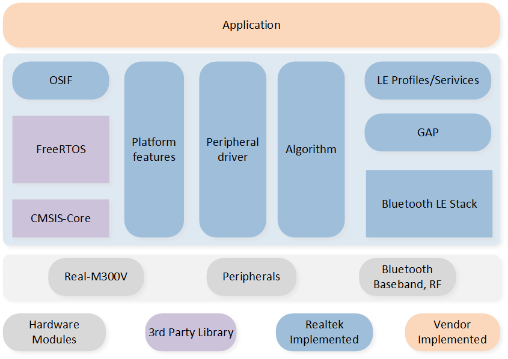
Tri-Mode Mouse 软件架构图
Platform: 包括 OTA、Flash、FTL 等。
IO Drivers: 提供对 RTL87x2G 外设接口的应用层访问。
OSIF: 实时操作系统的抽象层。
GAP: 用户应用程序与 BLE 协议栈通信的抽象层。
任务和优先级
如下图所示，应用程序共创建了六个任务：
{kind=link}
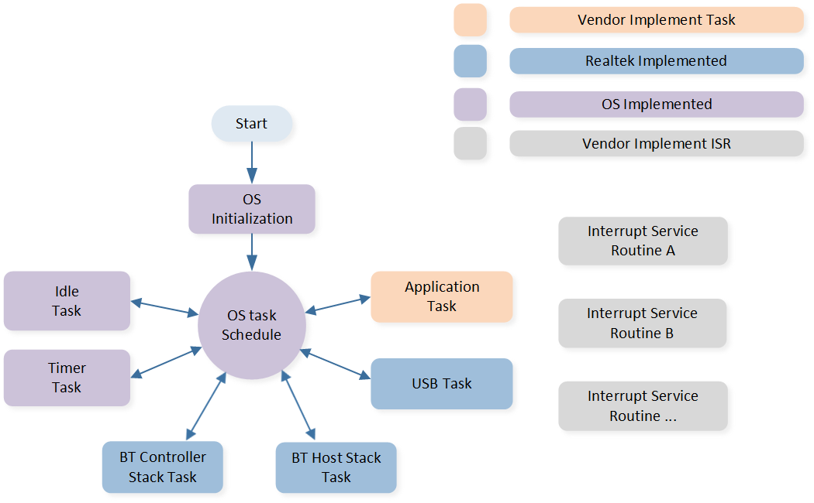
Tasks
各任务描述及优先级如下表：
任务 |
描述 |
优先级 |
|---|---|---|
Timer |
实现 FreeRTOS 所需的软件定时器 |
6 |
BT Controller stack |
实现 HCI 以下的 BLE 协议栈 |
6 |
BT Host stack |
实现 HCI 以上的 BLE 协议栈 |
5 |
USB |
处理 USB 数据交互 |
3 |
Application |
处理用户应用程序需求 |
2 |
Idle |
运行后台任务，包括 DLPS |
0 |
备注
可以创建多个应用任务，并相应地分配内存资源。
FreeRTOS 提供 Idle 任务和 Timer 任务。
已使用 SysTick 中断将任务配置为根据其优先级进行抢占。
中断服务例程 (ISR) 已由供应商实施。
程序初始化处理流程
鼠标上电后，APP 的初始化过程主要包含在 main() 函数和 app_main_task() 函数中，BLE/2.4G/USB 三种模式下的初始化过程有一定差异。
函数 main()
main() 函数中初始化过程包括：Flash 模式设置，SWD 设置，全局变量初始化，管脚初始化，驱动模块初始化，BLE/2.4G/USB 三种模式相关的初始化内容，电源模式初始化，软件定时器初始化，看门狗初始化，以及 app task 初始化和开启任务调度。

函数 main() 初始化内容
功能模块 |
|
|---|---|
默认为 1bit mode, FEAUTRE_SUPPORT_FLASH_2_BIT_MODE 设置为 1 后，会通过接口设置为 2bit mode。2bit mode 虽然操作 flash 速度更快，但也会增加静态功耗。因为大部分代码是跑在 ram 中的，且使用过程中操作 flash 场景和频次较少，所以推荐使用 1bit mode 即可。 |
|
SWD 可以在 CPU active 的时候作为 debug 手段，可以进行单步调试等，但需要使用 P1_0，P1_1，需要将宏 SWD_ENABLE 设置为 1。如果不使用 SWD，或者需要使用 P1_0 或 P1_1，需要设置宏 SWD_ENABLE 为 0，会调用此接口，使得 P1_0 和 P1_1 不受影响。 |
|
|
初始化所有模块所需要的全局变量。 |
|
初始化各个外设模块的 PAD 设置和 Pinmux 设置。 |
|
初始化各个模块的驱动配置，包括判断和获取当前鼠标所处的通信模式是 BLE/2.4G/USB 中的哪一种。如果当前处于 USB 模式，最后需要初始化 USB 模块。 |
Mode specific initialization |
如果处于 BLE 模式，需要对 BLE 进行相关的初始化，包括 |
|
如果关闭 DLPS_EN，或者当前处于 USB 模式，会设置为 Active mode，并调用 |
|
初始化软件定时器。 |
|
打开看门狗，可以通过宏 WATCH_DOG_TIMEOUT_MS 设置看门狗超时复位的时间，默认是 5 秒。 |
|
初始化 app task。 |
开启任务调度。 |
函数 app_main_task()
除了 main() 函数包括的初始化过程外，在 main() 函数中创建的 app task 也包含了一部分初始化内容。当任务开始调度后，会跑到 app_main_task() , 完成任务堆栈的分配、任务消息队列的创建后，根据不同模式进行初始化。
2.4G 模式：2.4G 初始化，电源模式初始化，2.4G 使能，NVIC 使能。
BLE 模式：将消息队列同步给 upperstack。NVIC 会等 upperstack 初始化完成再使能：在
app_handle_dev_state_evt()函数中 GAP_INIT_STATE_STACK_READY 状态下使能 NVIC。USB 模式：USB 使能，NVIC 使能。

函数 app_main_task() 初始化内容
消息和事件处理流程

Tri-Mode Mouse Message Handling Flow
模块 |
说明 |
|---|---|
Qdecoder module |
滚轮模块 |
Led module |
LED 灯效模块 |
Mode monitor module |
模式切换模块，识别并及时切换鼠标的三种模式 (BLE/2.4G/USB mode) |
Button module |
按键模块，支持 GPIO 按键和 Keyscan 按键 |
Sensor module |
光学传感器模块，本文以 PAW3395 为例 |
Battery module |
电池电量模块，包括电量的定时检测，低电量的处理等 |
USB module |
USB 模块，支持 Full/High Speed USB |
Watch dog module |
看门狗模块，包括 CPU active 和 DLPS 状态下两种看门狗 |
上图为 Tri-Mode Mouse 应用的消息和事件处理流程图，SDK 中会通过软件抽象层获取或设置各个外设模块的状态、行为和数据。需要及时处理的行为或数据，会直接在外设的中断处理函数中进行处理；对实时性要求不高的行为或数据，会发送消息给 app task，等 app task 得到调度后在消息处理函数中做处理。以按键模块为例，在对应的中断处理函数中进行按键数据的处理和发送，而组合键等的识别和处理，会通过消息机制发送给 app task 处理。
GAP 层通过 MSG 和 Event 机制通知 APP 层，APP 层通过 API 调用 GAP 层函数。gap_handle_msg() 中有详细的 GAP 消息/事件描述。
状态机
BLE/2.4G/USB 三种传输模式切换
模式拨片位置的确定
模式切换的拨片能拨到三个档位，OFF 档、BLE mode 档和 2.4G mode 档。相关管脚在 board.h 中定义：
#define MODE_MONITOR_EN
#if MODE_MONITOR_EN
#define BLE_MODE_MONITOR XI32K
#define BLE_MODE_MONITOR_IRQ GPIOA17_IRQn
#define ble_mode_monitor_int_handler GPIOA17_Handler
#define PPT_MODE_MONITOR XO32K
#define PPT_MODE_MONITOR_IRQ GPIOA18_IRQn
#define ppt_mode_monitor_int_handler GPIOA18_Handler
#define USB_MODE_MONITOR P1_2
#define USB_MODE_MONITOR_IRQ GPIOA10_IRQn
#define usb_mode_monitor_int_handler GPIOA10_Handler
#endif
根据 BLE_MODE_MONITOR 和 PPT_MODE_MONITOR 的电平高低情况判断当前拨片位置：
BLE_MODE_MONITOR 电平为低，PPT_MODE_MONITOR 为高，拨片位置在 BLE mode 档。
BLE_MODE_MONITOR 电平为高，PPT_MODE_MONITOR 为低，拨片位置在 2.4G mode 档。
BLE_MODE_MONITOR 电平为高，PPT_MODE_MONITOR 为高，拨片位置在中间 OFF 档。
根据 USB_MODE_MONITOR 的电平高低判断当前 USB 是否插入，USB_MODE_MONITOR 为高电平时表示 USB 插入。其相关的判断和处理在 mode_monitor_driver.c 和 mode_monitor_handle.c 中。
仅根据拨片位置选择模式
board.h 中宏定义 FEATURE_ALWAYS_IN_USB_MODE_WHTH_USB_INSET 设置为 0，鼠标的模式完全根据模式切换的拨片位置来决定：
拨片位置在 BLE mode 档：鼠标处于 BLE 模式，USB 插入不会切换模式，仅进行充电。
拨片位置在 2.4G mode 档：鼠标处于 2.4G 模式，USB 插入不会切换模式，仅进行充电。
拨片位置在 OFF 档，且 USB 插入，鼠标处于 USB 模式。
插入 USB 即为 USB 模式
board.h 中宏定义 FEATURE_ALWAYS_IN_USB_MODE_WHTH_USB_INSET 设置为 1，模式切换规则如下：
当 USB 没有被插入时，鼠标模式由拨片的位置决定。
当 USB 插入后，且 USB 枚举成功，不管鼠标处于什么模式都会重启并进入 USB 模式。
当 USB 插入后，但 USB 枚举失败，鼠标仍然会处于当前模式不变化，仅仅进行充电。
BLE 状态机

BLE 模式状态转换
序号 |
说明 |
|---|---|
1 |
Power On after GAP ready |
2 |
When APP call le_adv_start in idle status |
3 |
High duty cycle direct advertising time out, no connect request received |
4 |
When APP call le_adv_stop in advertising status |
5 |
When BT stack send GAP state change callback message from advertising to idle status |
6 |
When connection established |
7 |
When connection terminates in connected status |
8 |
When pairing successfully in connected status |
9 |
When connection terminates in paired status |
10 |
When BT stack sends GAP state change callback message from connection to idle status |
11 |
When low power voltage is detected in idle status |
12 |
When normal power voltage is detected in low power status |
2.4G 状态机
{kind=link}
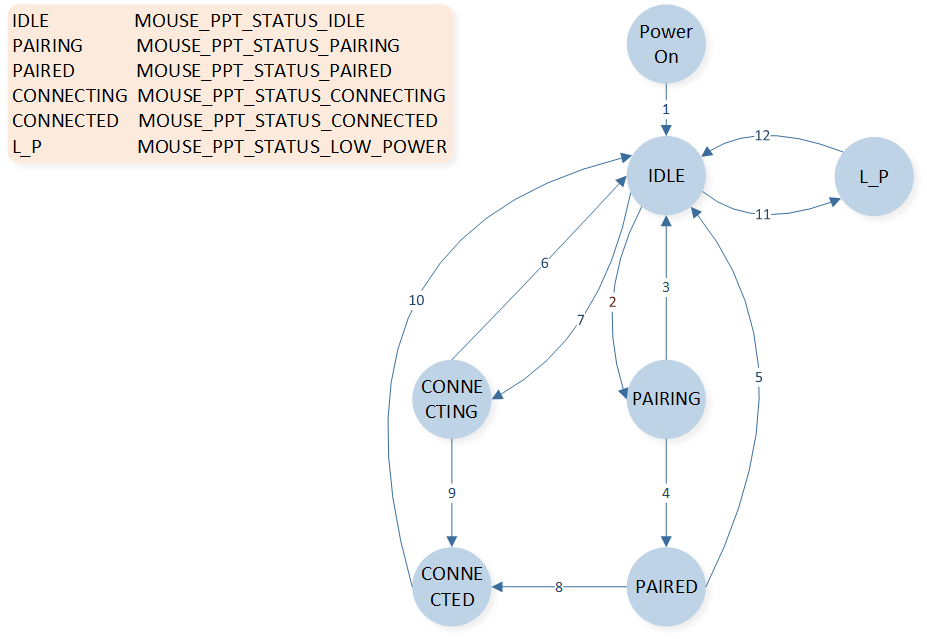
2.4G 模式状态转换
序号 |
说明 |
|---|---|
1 |
Power On after 2.4G driver init |
2 |
When APP calls ppt_pair in idle status |
3 |
When pairing times out, SYNC_EVENT_PAIR_TIMEOUT event received |
4 |
When pairing successfully, SYNC_EVENT_PAIRED event received |
5 |
When 2.4G link is lost in paired status, SYNC_EVENT_CONNECT_LOST event received |
6 |
When APP calls ppt_reconnect in idle status |
7 |
When connecting times out, SYNC_EVENT_PAIR_TIMEOUT event received |
8 |
When connecting successfully in paired status, MOUSE_PPT_STATUS_CONNECTED event received |
9 |
When connecting successfully, MOUSE_PPT_STATUS_CONNECTED event received |
10 |
When 2.4G link lost in connected status, SYNC_EVENT_CONNECT_LOST event received |
11 |
When low power voltage detected in idle status |
12 |
When normal power voltage detected in low power status |
定时器
软件定时器
App 默认能使用的软件定时器个数为 32 个，可以在 otp_config.h 中添加宏 TIMER_MAX_NUMBER 修改软件定时器个数。目前鼠标用到的软件定时器如下表所示。
序号 |
软件定时器 |
说明 |
|---|---|---|
1 |
adv_timer |
超时停止广播 |
2 |
update_conn_params_timer |
连接后进行连接参数更新操作 |
3 |
next_state_check_timer |
配对连接时 BLE 状态检测 |
4 |
achieve_ble_service_timer |
BLE 配对时确保获取服务后再使能 sensor |
5 |
no_act_disconn_timer |
长时间无操作，鼠标主动断开 BLE 连接 |
6 |
watch_dog_reset_dlps_timer |
Watch Dog 定时喂狗 |
7 |
ble_mode_monitor_debounce_timer |
BLE_MODE_MONITOR pin 脚 gpio 电平检测去抖 |
8 |
ppt_mode_monitor_debounce_timer |
PPT_MODE_MONITOR pin 脚 gpio 电平检测去抖 |
9 |
usb_mode_monitor_debounce_timer |
USB_MODE_MONITOR pin 脚 gpio 电平检测去抖 |
10 |
qdec_allow_enter_dlps_timer |
避免滚轮模块引起的长时间无法进入 DLPS |
11 |
combine_keys_detection_timer |
检测组合按键状态 |
12 |
long_press_key_detect_timer |
长按键的检测 |
13 |
keys_press_check_timer |
避免按键模块引起的长时间无法进入 DLPS |
14 |
remote_wake_up_flag_timer |
避免 USB 重复多次执行 remote wakeup |
15 |
led_gpio_ctrl_timer |
通过 PAD 方式驱动 LED 的控制 |
16 |
bat_detect_timer |
电池电量定时检测 |
17 |
cfu_status_check_timer |
通过 USB 升级固件时的状态检查 |
18 |
single_tone_timer |
进入产测模式后启动 USB 模块 |
19 |
single_tone_exit_timer |
产测模式下通过 HCI 指令控制时使用 |
硬件定时器
有两种硬件定时器可以供 app 使用，8 个普通的 HW Timer 和 4 个 Enhance Timer，具体的特性、区别和使用方式参考 datasheet，目前鼠标工程中已经使用的定时器有如下表所示。
序号 |
硬件定时器 |
说明 |
|---|---|---|
1 |
TIM0 |
蓝牙协议栈已使用，app 无法使用 |
2 |
TIM1 |
蓝牙协议栈已使用，app 无法使用 |
3 |
TIM2 |
app LED 模块用来输出 PWM 波控制 RGB LED |
4 |
TIM5 |
app 用来定时读取光学传感器的 x,y 数据 |
5 |
TIM6 |
app LED 模块使用检查和控制 RGB LED 的状态和颜色变化 |
6 |
ENH_TIM0 |
2.4G 协议栈已使用，app 无法使用 |
7 |
ENH_TIM1 |
2.4G 协议栈已使用，app 无法使用 |
8 |
ENH_TIM2 |
dongle 端已被 2.4G 协议栈使用，无法被 app 使用； mouse 端未被 2.4G 协议栈使用，app LED 模块用来输出 PWM 波控制 RGB LED |
9 |
ENH_TIM3 |
app LED 模块用来输出 PWM 波控制 RGB LED |
BLE 模式
BLE 初始化
鼠标处于 BLE 蓝牙模式，上电时需要对蓝牙相关内容进行初始化，包括如下：
main()函数中：其中蓝牙的地址，设备名称，默认的广播参数，绑定相关参数等都在
app_le_gap_init()中；服务的注册在app_le_profile_init()中。
le_gap_init(1);
gap_lib_init();
app_le_gap_init();
app_le_profile_init();
app_main_task()中：
gap_start_bt_stack(evt_queue_handle, io_queue_handle, MAX_NUMBER_OF_GAP_MESSAGE);
app_handle_dev_state_evt()中：当 BLE 协议栈初始化完成后，会通过消息机制通知 app，调用此接口获取配对信息，发送回连广播，使能 NVIC。
if (new_state.gap_init_state == GAP_INIT_STATE_STACK_READY)
{
APP_PRINT_INFO0("GAP stack ready");
......
}
HID 服务
BLE 模式下主要的服务为 HID service，其中 HID 描述符在 hids_ms.c 中由数组 hids_report_descriptor 定义。
BLE 广播
广播类型
鼠标使用的广播包均为非定向广播：Undirected advertising event。其中，AdvA 字段是发 advertising 封包设备的地址，AdvData 格式如下图所示。

ADV_IND PDU Payload
{kind=link}
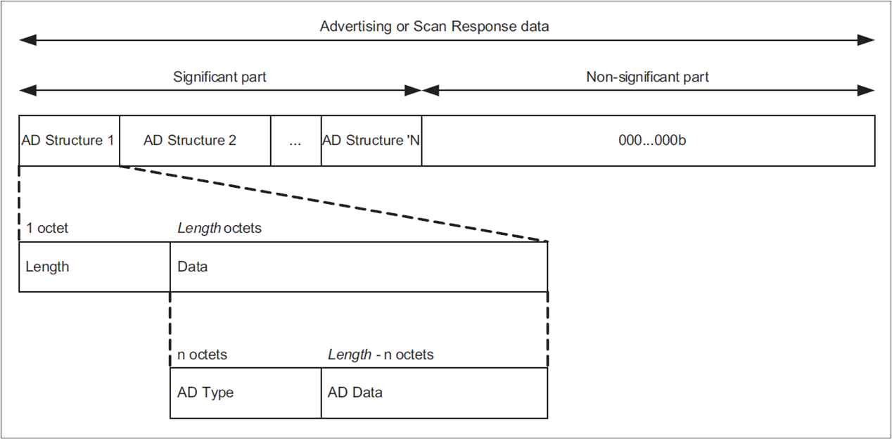
Advertising and Scan Response Data Format
鼠标应用程序通过调用 mouse_start_adv() 进行发送广播，并设定广播类型，鼠标广播类型枚举如下。
typedef enum
{
ADV_IDLE = 0,
ADV_DIRECT_HDC,
ADV_UNDIRECT_RECONNECT,
ADV_UNDIRECT_PAIRING,
} T_ADV_TYPE;
鼠标用到其中两种广播类型：ADV_UNDIRECT_PAIRING，ADV_UNDIRECT_RECONNECT。分别对应配对广播和回连广播。不建议使用 ADV_DIRECT_HDC 回连，有些电脑或平板不支持定向广播回连。
配对广播
鼠标在配对模式时发送配对广播包，用于和对端设备配对连接。配对广播包的格式为 Undirected Advertising Packet，Advertising Interval 范围建议设为 0x20 - 0x30（即 20ms - 30ms），广播超时时间通过宏 ADV_UNDIRECT_PAIRING_TIMEOUT 进行设置，默认为 60 秒。广播内容具体如下：
Flag Field (3 bytes) |
Appearance Field – Device type (4 bytes) |
Service Field (4 bytes) |
Local Name Field (<= 20 bytes) |
|---|---|---|---|
0x02, 0x01, 0x05 |
0x03, 0x19, 0xc2, 0x03 |
0x03, 0x03, 0x12, 0x18 |
C_DEVICE_NAME_LEN, 0x09, C_DEVICE_NAME |
其中 C_DEVICE_NAME_LEN 和 C_DEVICE_NAME 默认如下：
#define C_DEVICE_NAME 'B', 'L', 'E', '_', 'M', 'O', 'U', 'S', 'E', '(', '0', '0', ':', '0', '0', ')'
#define C_DEVICE_NAME_LEN (16+1) /* sizeof(C_DEVICE_NAME) + 1 */
回连广播
鼠标应用配置宏定义 FEATURE_SUPPORT_PRIVACY 必须配置为1，即打开随机地址解析功能。鼠标采用 Undirected Advertising + White List 方式进行回连，Advertising Interval 范围建议设为 0x20 - 0x30（即 20ms - 30ms），广播超时时间通过宏 ADV_UNDIRECT_RECONNECT_TIMEOUT 进行设置，默认为 60 秒。广播具体内容如下，其中 Flags 建议设置为 GAP_ADTYPE_FLAGS_BREDR_NOT_SUPPORTED(0x04)，这样只有曾经与之配对过的设备扫描到该广播会显示在设备列表里面。
Flag Field (3 bytes) |
Appearance Field – Device type (4 bytes) |
Service Field (4 bytes) |
Local Name Field (<= 20 bytes) |
|---|---|---|---|
0x02, 0x01, 0x04 |
0x03, 0x19, 0xc2, 0x03 |
0x03, 0x03, 0x12, 0x18 |
C_DEVICE_NAME_LEN, 0x09, C_DEVICE_NAME |
广播发送和停止
鼠标应用程序通过调用 mouse_start_adv() 进行发送广播。鼠标发送的配对和回连广播，都是通过调用 mouse_stop_adv() 来停止广播。停止广播的原因如下：
typedef enum
{
STOP_ADV_REASON_IDLE = 0,
STOP_ADV_REASON_PAIRING,
STOP_ADV_REASON_TIMEOUT,
STOP_ADV_REASON_LOWPOWER,
} T_STOP_ADV_REASON;
序号 |
原因 |
说明 |
|---|---|---|
1 |
STOP_ADV_REASON_IDLE |
收到 ADV_DIRECT_HDC 广播停止的 stack callback message |
2 |
STOP_ADV_REASON_PAIRING |
要进行配对广播的发送，停止当前的广播 |
3 |
STOP_ADV_REASON_TIMEOUT |
APP 广播超时后调用 le_adv_stop 停止广播 |
4 |
STOP_ADV_REASON_LOWPOWER |
停止广播，进入 Low Power 模式 |
停止广播后，不同原因可能会有不同的处理，均在 app_stop_adv_reason_handler() 中实现。
BLE 配对和连接
BLE 配对
鼠标触发配对有以下几种情况：
鼠标没有配对信息时：
长按组合键 左+中+右 3 秒，可以进入配对模式，发配对广播和设备进行配对连接。
当宏定义 FEATURE_SUPPORT_AUTO_PAIR_WHEN_POWER_ON 设置为 1 时，鼠标上电即可触发配对。
BLE 回连
鼠标通过发送回连广播包，用于鼠标保存有配对信息时迅速和对端设备建立连接。
在以下三种情况下，鼠标会发送回连广播包进行回连：
鼠标上电，如果鼠标成功配对过并且保存配对信息，在上电初始化完成后发送回连广播尝试回连。
鼠标和对端配对连接上后，发生了非预期断线（不是任何一方主动断线），鼠标会发送回连广播尝试回连。
鼠标和对端配对连接上后，有一方主动断线，重新使用鼠标时（移动，按键，滚轮），会发送回连广播尝试回连。
VID 和 PID
BLE 的默认 VID 和 PID 在 board.h 中，如下：
#define C_VID 0x005D
#define C_PID 0x0426
连接参数
默认的连接参数在 mouse_application.h 中，如下：
#define MOUSE_CONNECT_INTERVAL 0x06 /*0x06 * 1.25ms = 7.5ms*/
#define MOUSE_CONNECT_LATENCY 99
#define MOUSE_SUPERVISION_TIMEOUT 4500 /* 4.5s */
BLE 断线
鼠标和对端建立连线后，在以下三种情况下会断线：
链路异常而导致的断线（如超出连线距离，对端设备断电等），鼠标会发送回连广播，尝试回连。
对端主动和鼠标进行断线。
鼠标应用层调用
mouse_terminate_connection()来主动和对端进行断线。
其中鼠标主动断线的原因包括如下：
typedef enum
{
DISCONN_REASON_IDLE = 0,
DISCONN_REASON_PAIRING,
DISCONN_REASON_TIMEOUT,
DISCONN_REASON_PAIR_FAILED,
DISCONN_REASON_LOW_POWER,
DISCONN_REASON_ADDRESS_SWITCH,
DISCONN_REASON_MOUSE_MODE_SWITCH_TO_USB,
} T_DISCONN_REASON;
序号 |
原因 |
说明 |
|---|---|---|
1 |
DISCONN_REASON_IDLE |
初始化的默认值 |
2 |
DISCONN_REASON_PAIRING |
要进行配对广播的发送，断开 BLE 连接 |
3 |
DISCONN_REASON_TIMEOUT |
当宏 FEATURE_SUPPORT_NO_ACTION_DISCONN 设置为 1 时，无操作超时后断线 |
4 |
DISCONN_REASON_PAIR_FAILED |
配对失败，断开当前的连接 |
5 |
DISCONN_REASON_LOW_POWER |
要进入 Low Power Status，断开 BLE 连接 |
6 |
DISCONN_REASON_ADDRESS_SWITCH |
当打开多地址切换功能时，切换当前 ble 的 static random address |
7 |
DISCONN_REASON_MOUSE_MODE_SWITCH_TO_USB |
当宏 FEATURE_ALWAYS_IN_USB_MODE_WHTH_USB_INSET 设置为 1 时，在无线模式下插入 USB 并枚举成功 |
主动断线后，不同原因会有不同的处理，均在 app_disconn_reason_handler() 中实现。
BLE 数据发送
鼠标数据通过接口 app_ble_send_mouse_data() 进行发送。其中结构体 T_MOUSE_DATA 定义如下：
typedef struct t_mouse_data
{
uint8_t button;
uint16_t x;
uint16_t y;
uint8_t v_wheel;
uint8_t h_wheel;
} T_MOUSE_DATA;
其他数据，如 Keyboard，Consumer 或者 Vendor 数据，通过接口 app_ble_send_data() 来发送。
其他相关功能
Privacy 解析
只有将 board.h 中的宏定义 FEATURE_SUPPORT_PRIVACY 设置为 1，才能打开 privacy 解析功能，能够解析 random address。鼠标应用必须要将该宏定义置 1，以便可以和 random address 的设备进行配对和回连。
iOS 配对
由于和 iOS 配对有安全性的要求，鼠标必须将 board.h 中的宏定义 FEATURE_SUPPORT_HIDS_CHAR_AUTHEN_REQ 置 1 以便可以和 iOS 系统的设备进行配对和回连。
配对信息的保存和恢复
当 board.h 中的宏定义 FEATURE_SUPPORT_REMOVE_LINK_KEY_BEFORE_PAIRING 置 1 时，鼠标在发配对广播进行配对前，首先会清除原本的配对信息。
如果宏定义 FEATURE_SUPPORT_REMOVE_LINK_KEY_BEFORE_PAIRING 和 FEATURE_SUPPORT_RECOVER_PAIR_INFO 同时置为 1，鼠标会在清除配对信息前先进行备份（包括鼠标自己的 Static address），以便本次配对失败（包括但不限于配对超时、配对失败和中途下电等等）后，可以恢复原有的配对信息，和原来的设备进行回连；如果配对成功，原本配对信息的备份会被清除。
建议将 FEATURE_SUPPORT_REMOVE_LINK_KEY_BEFORE_PAIRING 和 FEATURE_SUPPORT_RECOVER_PAIR_INFO 均置为 1。
Data Length Extension
当 board.h 中的宏定义 FEATURE_SUPPORT_DATA_LENGTH_EXTENSION 置 1 时，鼠标和对端设备连接上后会主动请求将链路层的 data length 更新为 251。如果将该宏置 1，可以提高长包的交互速度。默认置 0。
不检查 CCCD
当 board.h 中的宏定义 FEATURE_SUPPORT_NO_CHECK_CCCD 置 1 时，鼠标和对端设备连接上，不需要对端更新 client characteristic configuration，鼠标就可以发送 notification 或 indication。
鼠标地址选择
可以配置 board.h 中的宏定义 FEATURE_MAC_ADDR_TYPE 来选择鼠标所使用的蓝牙地址类型，包括了：public address，单一的 static address，可切换的多个 static address。
默认使用单一的 static address。
#define FEATURE_SUPPORT_PUBLIC_ADDR 0 **../* use public addr*/
#define FEATURE_SUPPORT_SINGLE_LOCAL_STATIC_ADDR 1 **../* use single local random addr*/
#define FEATURE_SUPPORT_MULTIPLE_LOCAL_STATIC_ADDR 2 **../* use multiple local random addr \*/
#define FEATURE_MAC_ADDR_TYPE FEATURE_SUPPORT_SINGLE_LOCAL_STATIC_ADDR
#if (FEATURE_MAC_ADDR_TYPE == FEATURE_SUPPORT_MULTIPLE_LOCAL_STATIC_ADDR)
#define APP_MAX_BOND_NUM 2
#endif
Public 地址
当 board.h 中的宏定义 FEATURE_MAC_ADDR_TYPE 配置为 FEATURE_SUPPORT_PUBLIC_ADDR 时，鼠标使用 public address，即为 config file 中配置的 MAC address。当使用该地址时，鼠标在配对时地址不会改变。当与对端设备配对成功后，如果想要与该设备重新配对，则需要先从对端设备的设备列表中解除配对，才能重新配对。不推荐鼠标使用 public address。
单一 Static 地址
当 board.h 中的宏定义 FEATURE_MAC_ADDR_TYPE 配置为 FEATURE_SUPPORT_SINGLE_LOCAL_STATIC_ADDR 时，鼠标使用单一的 static address。
上电时鼠标会根据 MAC address 随机生成一个 static address 作为自己的地址来和对端设备进行配对和回连等，在重新配对前不会改变当前的 static address。当鼠标已经生成了 static address，并且和某一个设备配对过，本地有配对信息时，鼠标重新发起配对，会重新随机生成一个 static address 作为新的地址。
多 Static 地址切换
当鼠标需要和多个设备进行配对连接，在多个设备间快速切换时，需要把 board.h 中的宏定义 FEATURE_MAC_ADDR_TYPE 配置为 FEATURE_SUPPORT_MULTIPLE_LOCAL_STATIC_ADDR，鼠标使用可切换的多 static address。可切换的地址数量可以通过宏定义 APP_MAX_BOND_NUM 来修改，默认数量为 2 个。
上电时鼠标会根据 MAC address 随机生成多个 static address 作为自己的地址来和对端设备进行配对和回连等。这些 static address 单独来看和单一的 static address 在使用上是完全一样的，每个 static address 都可以单独的和一个设备配对连接。多个 static address 可以进行切换，切换 static address 就相当于在已配对的多个设备间进行切换。默认是通过组合键 滚轮中键+前进键 来进行多地址的切换。
BLE Tx Power 设置
当 board.h 中宏 FEATURE_SUPPORT_APP_CFG_BLE_TX_POWER 设置为 1 时（默认为 0），可以单独设置 BLE 模式的 tx power，否则 tx power 由 config file 中的配置决定。
2.4G 模式
2.4G 初始化
鼠标处于 2.4G 模式，上电时需要对 2.4G 相关内容进行初始化，包括如下：
app_main_task() 函数中：
if (app_global_data.mode_type == PPT_2_4G) { os_delay(100); mouse_ppt_init(); pwr_mgr_init(); mouse_ppt_enable(); app_nvic_config(); }
其中 os_delay 是系统延时 100ms，保证 2.4G RF 相关的上电初始化完成，可以进行后续 2.4G 的初始化; mouse_ppt_init() 是对 2.4G 相关的初始化; pwr_mgr_init() 是电源模式初始化，必须在 2.4G 初始化之后; mouse_ppt_enable() 是使能 2.4G 模块。
其中 mouse_ppt_init() 中主要包括了：
配置 2.4G 角色。
鼠标：master，接收器：slave。
添加一些 callback 函数，包括接收到数据后调用的 callback 函数
ppt_app_receive_msg_cb()；发送完数据后调用的 callback 函数ppt_app_send_msg_cb()；2.4G 事件处理的 callback 函数ppt_app_sync_event_cb()，包括的事件有：
SYNC_EVENT_PAIRED：2.4G 配对成功，该事件产生后，会马上产生 SYNC_EVENT_CONNECTED 事件。
SYNC_EVENT_PAIR_TIMEOUT：2.4G 配对超时。
SYNC_EVENT_CONNECTED：2.4G 成功建立连接，回连成功会产生该事件，配对成功会先产生 SYNC_EVENT_PAIRED 再产生该事件。
SYNC_EVENT_CONNECT_TIMEOUT：2.4G 回连超时。
SYNC_EVENT_CONNECT_LOST：链路异常断线。
获取绑定信息。
ppt_app_global_data.is_ppt_bond = ppt_check_is_bonded()设置配对时的 rssi 限制。
sync_pair_rssi_set()：默认参数设定 -65，表示 rssi 必须大于 -65dbm 才允许配对，2.4G master 和 slave 两端都可以各自单独配置。设置 2.4G 的连接参数。
设置数据包通信间隔和重传间隔:
mouse_ppt_set_sync_interval()。设置心跳包间隔：
sync_master_set_hb_param()。设置 CRC 校验参数，SDK 设定的校验长度为 16 bits：
sync_crc_set()。设置不同 2.4G 传输类型数据的缓存 buffer 深度：2.4G driver 可以缓存一些发送的数据，不同的数据类型有各自的 buffer。
/** * Different message types have different queue size, from left to right correspond to SYNC_MSG_TYPE_ONESHOT, * SYNC_MSG_TYPE_FINITE_RETRANS, SYNC_MSG_TYPE_INFINITE_RETRANS, and SYNC_MSG_TYPE_DYNAMIC_RETRANS, respectively. */ uint8_t msg_quota[SYNC_MSG_TYPE_NUM] = {0, 2, 2, 2}; sync_msg_set_quota(msg_quota);{0, 2, 2, 2} 表示 SYNC_MSG_TYPE_ONESHOT, SYNC_MSG_TYPE_FINITE_RETRANS, SYNC_MSG_TYPE_INFINITE_RETRANS, SYNC_MSG_TYPE_DYNAMIC_RETRANS 四种数据类型的缓存 buffer 深度分别设置为 0, 2, 2, 2。
sync_tx_power_set()设置 2.4G tx power。否则 tx power 由 config file 中的配置决定。
2.4G 配对和连接
2.4G 配对
鼠标程序中调用 mouse_ppt_pair() 发起配对，持续 1 秒。如果配对成功，会依次产生 SYNC_EVENT_PAIRED 和 SYNC_EVENT_CONNECTED 两个事件通知 app 并进行相应的处理。如果 1 秒内没有配对成功，会产生 SYNC_EVENT_PAIR_TIMEOUT 事件，会重新尝试配对，尝试的次数可以通过宏定义 PPT_PAIR_TIME_MAX_COUNT 修改，默认为 30 次，即配对时长为 30 秒。
以下几种情况会触发配对：
长按组合键 左+中+右 3 秒，触发配对。
当宏定义 FEATURE_SUPPORT_AUTO_PAIR_WHEN_POWER_ON 设置为 1 时，鼠标上电后如果没有配对信息，即可触发配对。
2.4G 回连
鼠标程序中调用 mouse_ppt_reconnect() 发起回连，持续 1 秒。如果回连成功，会产生 SYNC_EVENT_CONNECTED 事件。如果 1 秒内没有回连成功，会产生 SYNC_EVENT_CONNECT_TIMEOUT 事件，会重新尝试回连，尝试的次数可以通过宏定义 PPT_RECONNECT_TIME_MAX_COUNT 修改，默认为 4 次，也就是 4 秒。
以下几种情况会触发回连：
上电后，2.4G 有配对信息，会尝试回连。
当 2.4G 链路异常断线产生了 SYNC_EVENT_CONNECT_LOST 事件，会尝试回连。
发包间隔和上报率
鼠标（2.4G master）上电时在 mouse_ppt_init() 通过调用 mouse_ppt_set_sync_interval() 来设置 2.4G 正常数据通信时的发包间隔，发包间隔根据当前设置的上报率来配置，比如上报率为 1KHz，发包间隔就设置为 1000us。
接收器（2.4G slave）不需要设置发包间隔，接收器和鼠标配对上后，会根据鼠标的参数来调整。
如果在 2.4G 使能后要调整发包间隔，必须保证鼠标在 2.4G idle 状态，即需要断线，且不进行配对或回连，然后重新设置发包间隔即可，接口为 mouse_ppt_set_sync_interval()。
心跳包
在 2.4G 建立连接以后，且没有数据交互时，2.4G 会定期交互心跳包，以维持连接。以最后一笔数据交互为起始点，经过一段时间（10ms）没有发生新的数据交互（非空包），会开始通过心跳包维持连接。
鼠标（2.4G master）上电时在 mouse_ppt_init() 通过调用 sync_master_set_hb_param() 来设置 2.4G 心跳包的发包间隔，默认值为 250ms。接收器（2.4G slave）不需要设置心跳包间隔。
/* set 2.4G connection heart beat interval */
sync_master_set_hb_param(2, PPT_DEFAULT_HEARTBEAT_INTERVAL_TIME,0);
CRC 校验
鼠标（2.4G master）的校验长度默认使用 16 bits，可以在 mouse_ppt_init() 通过调用 sync_crc_set() 来配置。如果要在 2.4G 使用过程中重新配置校验长度，必须先调用 mouse_ppt_stop_sync() 断开 2.4G 连接。校验长度推荐使用 16 bit，在实际使用中传输数据的准确性更高；相比于使用 8bit，应用层最大可传输长度会减少 1 Byte，并且画线功耗会略有增加。
2.4G 断线
在 2.4G 连接建立后，发生以下三种情况会认为连接已经断开：
有数据持续交互时，持续一段时间（3*发包间隔）没有交互成功。
无数据交互时，通过心跳包维持连接，以心跳包时刻起一段时间（心跳包间隔+3*发包间隔）没有交互成功。
board.h 中宏定义 FEATURE_SUPPORT_NO_ACTION_DISCONN 设置为 1 时，打开无操作断线的功能，当鼠标处于连接状态时，且一段时间没有被使用后，会主动断线。可以通过滚轮，按键或者移动鼠标进行回连。无操作断线的时间可以通过
swtimer.h中的宏定义 NO_ACTION_DISCON_TIMEOUT 来修改，默认时间为 1 分钟。
除主动断线外，其他异常断线情况都会收到 SYNC_EVENT_CONNECT_LOST 事件，会尝试回连。
2.4G 数据传输
2.4G 传输类型
2.4G 的传输类型有以下 4 种：
SYNC_MSG_TYPE_ONESHOT：只发送一次，不重传。
SYNC_MSG_TYPE_FINITE_RETRANS：有限次数的重传发送，通过
sync_msg_set_finite_retrans()来配置重传次数。SYNC_MSG_TYPE_INFINITE_RETRANS：无限重传的发送。
SYNC_MSG_TYPE_DYNAMIC_RETRANS：动态重传的发送，会一直重传，直到有新数据需要发送。
typedef enum
{
SYNC_MSG_TYPE_ONESHOT,
SYNC_MSG_TYPE_FINITE_RETRANS,
SYNC_MSG_TYPE_INFINITE_RETRANS,
SYNC_MSG_TYPE_DYNAMIC_RETRANS,
SYNC_MSG_TYPE_NUM,
SYNC_MSG_TYPE_ALL = SYNC_MSG_TYPE_NUM
} sync_msg_type_t;
应用层数据类型
接收器在收到 2.4G 数据后，需要根据不同的应用数据类型（比如鼠标数据，按键数据等等），通过 USB 往不同的通道（可能 endpoint，report ID 等等不同）发送。为了区分不同的应用数据类型，鼠标端将发送的数据的前一个或两个字节作为 Header，以表征应用数据类型和数据内容。Header 内容参考 T_PPT_SYNC_APP_HEADER。
应用层数据长度
在一个 2.4G 发包间隔中，鼠标和接收器可以同时给对方发送数据，鼠标发送给接收器称之为上行，接收器发送给鼠标称之为下行，2.4G 在一个发包间隔中上行和下行的应用层数据长度总和如下：
发包间隔 250us（上报率 4KHz）：18 bytes
发包间隔 500us（上报率 2KHz）：70 bytes
发包间隔 1 ms（上报率 1 KHz）：127 bytes
以上数据基于 CRC 校验长度 8 bits，如果增加校验长度，则应用层数据长度需要减小相应的字节数。2.4G 数据长度最大不能超过 127 bytes。当 2.4G 需要发送的数据，超过一个发包间隔内发包长度时，会占用后续的发包时间直到把当前数据全部发送完成，相当于根据数据长度，动态调整了发包间隔。
应答和重传
2.4G 交互是需要应答的，如果一方没有收到 ACK，则认为这笔包没有发送成功，根据不同的 2.4G 数据传输类型和重传配置进行重传：
SYNC_MSG_TYPE_ONESHOT：发送失败不重传。
SYNC_MSG_TYPE_FINITE_RETRANS：有限次数的重传发送，重传次数通过
sync_msg_set_finite_retrans()来配置。SYNC_MSG_TYPE_INFINITE_RETRANS：无限重传。
SYNC_MSG_TYPE_DYNAMIC_RETRANS：动态重传，当没有新的数据送到 2.4G driver tx buffer 中，tx buffer 中的数据会无限重传，当有新数据送到 2.4G driver tx buffer 中时，tx buffer 原本待发送的数据如果已经发送超过一次（重传 0 次）会停止重传，移出 tx buffer。也就是数据重传的次数范围为 0 到无限次。
鼠标（2.4G master）在 mouse_ppt_set_sync_interval() 通过调用 sync_time_set() 来设置 2.4G 数据包重传间隔，调用接口时第一项参数选择 SYNC_TIME_PARAM_CONNECT_INTERVAL_HIGH，第二项参数即可设置具体的重传时间，默认是 250us。当 2.4G 发包间隔超过 250us 时，每个发包间隔内有多次重传的机会（发包间隔/250us -1），比如发包间隔为 1ms，当数据发送失败时，有 3 次重传机会，每 250us 重传一次。
2.4G Tx Power 设置
当 board.h 中宏 FEATURE_SUPPORT_APP_CFG_PPT_TX_POWER 设置为 1 时（默认为 0），可以单独设置 2.4G 模式的 tx power，否则 tx power 由 config file 中的配置决定。
USB 模式
USB 状态
USB 的所有状态如下：
typedef enum
{
USB_PDN = 0,
USB_ATTACHED = 1,
USB_POWERED = 2,
USB_DEFAULT = 3,
USB_ADDRESSED = 4,
USB_CONFIGURED = 5,
USB_SUSPENDED = 6,
} T_USB_POWER_STATE;
说明：
USB_PDN：上电后的默认状态。
USB_ATTACHED：使能了 USB，但没有打开 USB clock。
USB_POWERED：使能并打开了 USB clock。
USB_DEFAULT：USB 插入并复位后的默认状态。
USB_ADDRESSED：USB 设备已经被分配地址。
USB_CONFIGURED：USB 设备已被配置，进入这个状态，一般认为 USB 枚举成功了。
USB_SUSPENDED：USB 进入 suspend 状态。
初始化
调用 usb_driver_init() 对 USB 模块进行初始化，包括：设置 USB 中断优先级，注册回调函数，初始化 USB 设备和配置描述符，初始化 USB 接口和端点，初始化 HID。初始化过程如下：
设置 USB 中断优先级为 3:
usb_isr_set_priority(3)，USB lib 中默认设置为 2（USB 需低于 2.4G 中断优先级，2.4G 中断优先级为 2）。调用
usb_dm_cb_register()注册回调函数，获取 USB 状态改变；调用usb_spd_cb_register()注册回调函数，获取 USB speed。例如 app 通过app_usb_state_change_cb()获知当前的 USB 状态是枚举成功还是 suspend，通过app_usb_speed_cb()获知当前是 full speed 还是 high speed。初始化 USB 设备描述符和配置描述符：
usb_dm_core_init()和usb_dev_cfg_init()，进行设备描述符和配置描述符相关的初始化。初始化 USB 接口：默认初始化了三个接口，初始化函数为：
usb_interface_mouse_init()
usb_interface_keyboard_init()
usb_interface_dfu_init()初始化 HID：
usb_hid_driver_init()。初始化 dfu 接口的 out report pipe:
usb_dfu_pipe_open()。如需增加其他接口的 out report pipe，都要放在 USB 初始化的最后一步。
设备描述符初始化
在 usb_dev_cfg_init() 中，通过调用函数 usb_dev_driver_dev_desc_register() 和 usb_dev_driver_string_desc_register() 进行设备描述符的初始化，设备描述符相关内容通过 usb_device.c 的两个局部变量 usb_dev_desc 和 dev_strings 来修改。其中 USB VID 默认为 0x0BDA，USB PID 默认为 0x4762。
#define USB_VID 0x0BDA
#define USB_PID 0x4762
#define USB_BCD_DEVICE 0x0426
static T_USB_DEVICE_DESC usb_dev_desc =
{
.bLength = sizeof (T_USB_DEVICE_DESC),
.bDescriptorType = USB_DESC_TYPE_DEVICE,
.bcdUSB = 0x0200,
.bDeviceClass = 0,
.bDeviceSubClass = 0,
.bDeviceProtocol = 0,
.bMaxPacketSize0 = 64,
.idVendor = USB_VID,
.idProduct = USB_PID,
.bcdDevice = USB_BCD_DEVICE,
.iManufacturer = STRING_ID_MANUFACTURER,
.iProduct = STRING_ID_PRODUCT,
.iSerialNumber = STRING_ID_SERIALNUM,
.bNumConfigurations = 1,
};
static T_STRING dev_strings[] =
{
[0] =
{
.id = STRING_ID_MANUFACTURER,
.s = "RealTek",
},
[1] =
{
.id = STRING_ID_PRODUCT,
.s = "RTK Mouse",
},
[2] =
{
.id = STRING_ID_SERIALNUM,
.s = "0123456789A",
},
[3] =
{
.id = STRING_ID_UNDEFINED,
.s = NULL,
},
};
配置描述符初始化
在 usb_dev_cfg_init() 中，通过调用函数 usb_dev_driver_string_desc_unregister() 进行配置描述符的初始化，配置描述符相关内容通过 usb_device.c 的变量 usb_cfg_desc 来修改。
static T_USB_CONFIG_DESC usb_cfg_desc =
{
.bLength = sizeof (T_USB_CONFIG_DESC),
.bDescriptorType = USB_DESC_TYPE_CONFIG,
.wTotalLength = 0xFFFF,
// wTotalLength will be recomputed in usb lib according total interface descriptors
.bNumInterfaces = 3,
// bNumInterfaces will be recomputed in usb lib according total interface num
.bConfigurationValue = DEFAULT_CONFIGURATION_VALUE,
.iConfiguration = STRING_ID_UNDEFINED,
.bmAttributes = REMOTE_WAKE_UP_ENALBE | RESERVED_TO_1_ENABLE,
// support remote wake up
.bMaxPower = 250
};
USB接口初始化
SDK 中默认初始化了三个 HID 接口，mouse interface, keyboard interface 和 dfu interface，分别用于鼠标数据，键盘数据（keyboard，consumer 和自定义数据）和 DFU 数据的交互。下面以 mouse interface 为例进行说明。
通过 usb_interface_mouse_init() 进行 mouse interface 的初始化，包括 USB 接口描述符，USB 端点描述符和 HID 描述符的初始化，以及 set/get report 和 set/get protocol 的回调函数的注册。
void usb_interface_mouse_init(void)
{
inst = usb_hid_driver_inst_alloc();
#if FEATURE_CHANGE_USB_INTERVAL_FOR_REPORT_RATE
uint32_t usb_report_rate = get_report_rate_level_by_index(USB_MODE, app_global_data.usb_report_rate_index, app_global_data.max_report_rate_level);
usb_set_mouse_interface_hs_interval(usb_report_rate);
#endif
usb_hid_driver_if_desc_register(inst, (void*)hid_if_descs_hs, (void*)hid_if_descs_fs, (void*)report_descs);
T_USB_HID_DRIVER_CBS cbs;
cbs.get_report = usb_hid_get_report;
cbs.set_report = usb_hid_set_report;
cbs.get_protocol = usb_hid_get_protocol;
cbs.set_protocol = usb_hid_set_protocol;
usb_hid_driver_cbs_register(inst, &cbs);
}
USB 接口描述符为：
static T_USB_INTERFACE_DESC hid_std_if_desc = { .bLength = sizeof(T_USB_INTERFACE_DESC), .bDescriptorType = USB_DESC_TYPE_INTERFACE, .bInterfaceNumber = USB_INTERFACE_NUM, .bAlternateSetting = 0, .bNumEndpoints = USB_EP_NUM, .bInterfaceClass = USB_CLASS_CODE_HID, .bInterfaceSubClass = USB_SUBCLASS_HID_BOOT, .bInterfaceProtocol = HID_MOUSE_PROTOCOL, .iInterface = 0, };
USB 端点描述符如下，其中只用到了一个端点：
static T_USB_ENDPOINT_DESC int_in_ep_desc_fs = { .bLength = sizeof(T_USB_ENDPOINT_DESC), .bDescriptorType = USB_DESC_TYPE_ENDPOINT, .bEndpointAddress = HID_INT_IN_EP_1, .bmAttributes = USB_EP_TYPE_INT, .wMaxPacketSize = 64, .bInterval = 1, }; static uint8_t hs_int_interval = 1; static T_USB_ENDPOINT_DESC int_in_ep_desc_hs = { .bLength = sizeof(T_USB_ENDPOINT_DESC), .bDescriptorType = USB_DESC_TYPE_ENDPOINT, .bEndpointAddress = HID_INT_IN_EP_1, .bmAttributes = USB_EP_TYPE_INT, .wMaxPacketSize = 64, .bInterval = 1, };
HID 描述符为：
static T_HID_CS_IF_DESC hid_cs_if_desc = { .bLength = sizeof(T_HID_CS_IF_DESC), .bDescriptorType = DESC_TYPE_HID, .bcdHID = 0x0110, .bCountryCode = 0, .bNumDescriptors = 1, .desc[0] = { .bDescriptorType = DESC_TYPE_REPORT, .wDescriptorLength = sizeof(report_descs), }, };
USB Start/Stop
如果处于 USB 模式，上电时在 app_main_task() 中调用 usb_start() 初始化和使能 USB，并打开 USB clock。
void usb_start(void) { is_usb_allow_enter_dlps = false; usb_driver_init(); APP_PRINT_INFO0("usb_start"); usb_dm_start(false); }
当上电初始化完成后，程序运行过程中，可以通过 usb_stop() 完全关闭 USB 模块。
void usb_stop(void) { APP_PRINT_INFO0("usb_stop"); usb_state = USB_PDN; usb_dm_stop(); is_usb_allow_enter_dlps = true; }
USB HID Class
HID 描述符和报告描述符
以 mouse interface 为例进行说明。
HID 描述符如下。
static T_HID_CS_IF_DESC hid_cs_if_desc = { .bLength = sizeof(T_HID_CS_IF_DESC), .bDescriptorType = DESC_TYPE_HID, .bcdHID = 0x0110, .bCountryCode = 0, .bNumDescriptors = 1, .desc[0] = { .bDescriptorType = DESC_TYPE_REPORT, .wDescriptorLength = sizeof(report_descs), }, };
报告描述符可参考
report_descs[]。
Interrupt Transfers
Interrupt Transfers - IN
以 mouse interface 为例对中断 IN 传输进行说明。
通过 app_usb_send_mouse_data() 进行 Interrupt report。接口里调用了 usb_send_mouse_data()，里面又调用了 usb_send_data()。
usb_send_data() 有三个参数，USB report ID，数据指针和数据长度。首次调用该函数会调用 usb_mouse_pipe_open() 初始化 USB 缓存队列，以存放 interrupt report data。其中 .high_throughput = 1 表示 interrupt report 相关的处理都会直接在 USB 中断处理函数中进行，保证实时性；否则发送消息给 USB task，在 USB task 中进行处理。MOUSE_MAX_TRANSMISSION_UNIT_SIZE 为缓存队列中单元的最大 byte size。MOUSE_MAX_PIPE_DATA_NUM 为缓存队列的最大深度，当数据溢出时会丢弃最老的数据，保证新数据能正常入队。
/**
* @brief Open usb pipe
* @param None
* @return None
*/
static void *usb_mouse_pipe_open(void)
{
T_USB_HID_DRIVER_ATTR attr =
{
.zlp = 1,
.high_throughput = 1,/*if it is set to 1, it can be executed in interrupt, else it execute in task.*/
.congestion_ctrl = USB_PIPE_CONGESTION_CTRL_DROP_CUR,
.rsv = 0,
.mtu = MOUSE_MAX_TRANSMISSION_UNIT_SIZE
};
return usb_hid_driver_data_pipe_open(HID_INT_IN_EP_1, attr, MOUSE_MAX_PIPE_DATA_NUM, NULL);
}
Interrupt Transfers - OUT
如果用户需要在新增的 interface 里新增中断 OUT 传输，可以参考 usb_hid_interface_dfu.c 中的 HID_INT_OUT_EP_3 所有相关内容。
备注
USB_EP_NUM 需要改成 2。
Boot Mode Report
以 mouse interface 为例进行说明。
在 interface 初始化函数中，注册 set/get protocol 的回调函数：
/**
* @brief USB interface init
* @param None
* @return None
*/
void usb_interface_mouse_init(void)
{
inst = usb_hid_driver_inst_alloc();
#if FEATURE_CHANGE_USB_INTERVAL_FOR_REPORT_RATE
uint32_t usb_report_rate = get_report_rate_level_by_index(USB_MODE,
app_global_data.usb_report_rate_index, app_global_data.max_report_rate_level);
usb_set_mouse_interface_hs_interval(usb_report_rate);
#endif
usb_hid_driver_if_desc_register(inst, (void *)hid_if_descs_hs, (void *)hid_if_descs_fs,
(void *)report_descs);
T_USB_HID_DRIVER_CBS cbs = {0};
cbs.get_report = usb_hid_get_report;
cbs.set_report = usb_hid_set_report;
cbs.get_protocol = usb_hid_get_protocol;
cbs.set_protocol = usb_hid_set_protocol;
usb_hid_driver_cbs_register(inst, &cbs);
}
通过 usb_hid_set_protocol() 获取 USB protocol，如果是 HID_BOOT_PROTOCOL 就意味着 USB host 在 boot mode，此时为了兼容性考虑，修改上报率上限为 1KHz，防止丢包。
如果 USB protocol 为 HID_REPORT_PROTOCOL， usb_send_mouse_data() 和 usb_send_data() 中根据报告描述符发送数据 (report ID + report data)；如果为 HID_BOOT_PROTOCOL，会按照 boot mode 所需的固定数据结构发送数据。
Set/Get Report
以 dfu interface 为例进行说明。
在 interface 初始化函数中，注册 set/get report 的回调函数：
void usb_interface_mouse_init(void)
{
...
cbs.get_report = usb_hid_get_report;
cbs.set_report = usb_hid_set_report;
usb_hid_driver_cbs_register(inst, &cbs);
}
usb_hid_set_report() 有三个参数：USB report ID，数据指针和数据长度指针。需要给数据指针和数据长度指针进行赋值。返回值为 0 时表示 success。
static int usb_hid_get_report(uint8_t report_id, void *buf, uint16_t *len)
{
uint8_t *p_data = (uint8_t *)buf;
#if FEATURE_SUPPORT_MP_TEST_MODE
#if (THE_WAY_TO_ENTER_MP_TEST_MODE == ENTER_MP_TEST_MODE_BY_USB_CMD)
if (report_id == REPORT_ID_MP_CMD)
{
p_data[0] = report_id;
mp_test_get_report_handle(&p_data[1], len);
*len += 1;
}
else
#endif
#endif
{
#if FEATURE_SUPPORT_USB_DFU
p_data[0] = report_id;
usb_dfu_handle_get_report_packet(report_id, &p_data[1], len);
*len += 1;
#endif
}
APP_PRINT_INFO2("[usb_hid_get_report] report_id = 0x%x, len = %d", report_id, *len);
return 0;
}
usb_hid_set_report() 有两个参数：数据指针和数据长度，其中数据的第一个字节为 report ID。返回值为 0 时表示 success。
static int usb_hid_set_report(void *buf, uint16_t len)
{
uint8_t *p_data = (uint8_t *)buf;
uint8_t report_id = p_data[0];
APP_PRINT_INFO3("[usb_hid_set_report] report_id = 0x%x, len = %d, p_data = 0x %b", report_id,
len, TRACE_BINARY(len, p_data));
#if FEATURE_SUPPORT_MP_TEST_MODE
#if (THE_WAY_TO_ENTER_MP_TEST_MODE == ENTER_MP_TEST_MODE_BY_USB_CMD)
if (report_id == REPORT_ID_MP_CMD)
{
mp_test_set_report_handle(&p_data[1], len - 1);
}
else
#endif
#endif
{
#if FEATURE_SUPPORT_USB_DFU
usb_dfu_handle_set_report_packet(report_id, &p_data[1], len - 1);
#endif
}
return 0;
}
设备枚举
USB 设备进行枚举时，会进行 set/get descriptor 和 set/get config。当进行了 set config 后，USB 状态会进行切换，在 app_usb_state_change_cb() 获知状态切换到了 USB_CONFIGURED，认为 USB 设备枚举完成。USB 模式下，状态切到 USB_CONFIGURED 后，鼠标数据才允许正常发送。宏 FEATURE_ALWAYS_IN_USB_MODE_WHTH_USB_INSET 设置为 1 时，插入 USB 即为 USB 模式，USB 状态切到 USB_CONFIGURED 后，鼠标才会重启切到 USB 模式。
休眠和唤醒
USB suspend 时候状态会切到 USB_SUSPENDED，此时允许进入 DLPS。
USB 进入 suspend 以后，有两种方式唤醒：USB host wakeup 和鼠标主动 wakeup。使用鼠标尝试发送 USB 数据时，如果当前处于 suspend 状态，会主动进行 wakeup。以鼠标数据发送为例：
bool app_usb_send_mouse_data(T_MOUSE_DATA *mouse_data)
{
......
if (usb_state == USB_SUSPENDED)
{
if (usb_wakeup_state == USB_WAKEUP_ENABLE && is_remote_waking_up == false)
{
uint8_t zero[USB_MOUSE_DATA_LEN] = {0};
if (0 != memcmp(mouse_data, zero, sizeof(zero)))
{
APP_PRINT_INFO0("[app_usb_send_mouse_data] usb wakeup");
......
if (0 == usb_hid_driver_remote_wakeup(false))
{
is_usb_allow_enter_dlps = false;
is_remote_waking_up = true;
......
}
}
}
}
}
return ret;
}
当 USB 从 suspend 状态被唤醒后，会重新进行枚举，进入 USB_SUSPENDED 状态，并发送一笔数据以触发对端设备亮屏。
按照 USB spec 规定，需要 USB host 使能鼠标 remote wake up 功能后，鼠标才有主动唤醒的能力。当将宏 FEATURE_SUPPORT_USB_FORCE_WAKE_UP_HOST 置 1 后，鼠标在需要唤醒 USB host 时会进行强制唤醒，不会检查是否被使能了 remote wake up 功能。
根据上报率调整 USB 发包间隔
当 board.h 中宏 FEATURE_CHANGE_USB_INTERVAL_FOR_REPORT_RATE 设置为 1 时，打开根据上报率调整 USB interrupt report interval 功能。打开该功能后，当切换上报率后，会切换 USB interrupt report interval 与上报率匹配，比如上报率为 1KHz 时，interval 会调整到 1ms。当鼠标为 USB 模式时，切换上报率会在 mouse_report_rate_change_handle() 函数中关闭 USB 并重新使能，在初始化的过程中, usb_interface_mouse_init() 函数中会根据当前的上报率设置 USB interrupt report interval。
如果鼠标处于 2.4G 模式，配对或回连成功后会通过 app_ppt_send_report_rate() 发送当前的上报率给接收器，接收器端 USB 也会根据上报率调整 USB interrupt report interval。
按键
可以通过 GPIO 或硬件 Keyscan 两种方案实现按键功能。两种方案在功能和性能上，主要差别如下：
键按下时，Keyscan 方案的功耗会稍微高一些：GPIO 方案通过触发 GPIO 中断来检测按键按下和释放，按键按下时也可以进入 DLPS；Keyscan 方案在按键按下后需要持续扫描，无法进入 DLPS（进入 DLPS 后 Keyscan 硬件模块会掉电，无法进行扫描），因此按键按下时，Keyscan 方案的功耗会稍微高一些。
在 IO 管脚数量有限时，Keyscan 可以提供更多的输入，实现更多的按键。
GPIO 按键
GPIO 方案需要将 board.h 中宏定义 MOUSE_GPIO_BUTTON_EN 设置为 1。通过读取管脚输入电平判断用户是否按下或释放按键，采用硬件 GPIO debounce 实现去抖功能。以按键按下检测为例，基本流程为：GPIO 初始设定低电平触发中断，当用户按下按键超过配置的 GPIO debounce 时间，会触发 GPIO 中断。中断处理函数中，会实时发送键值，并把按键事件发送给 app task 进行对实时性要求不高的处理（如组合键和功能键等），同时把 GPIO 设定为高电平触发去检测按键释放。
{kind=link}
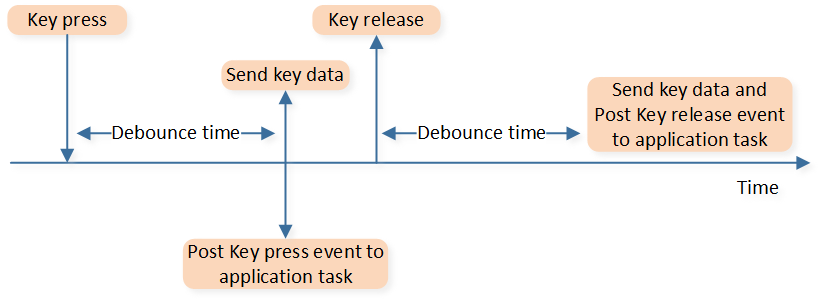
GPIO 按键检测和处理流程
GPIO 管脚配置
GPIO 按键方案使用的管脚、IRQ 以及中断函数在 board.h 中配置：
#define LEFT_BUTTON P1_2
#define LEFT_BUTTON_IRQ GPIOA10_IRQn
#define left_button_int_handler GPIOA10_Handler
#define RIGHT_BUTTON P2_7
#define RIGHT_BUTTON_IRQ GPIOA28_IRQn
#define right_button_int_handler GPIOA28_Handler
#define MID_BUTTON P2_3
#define MID_BUTTON_IRQ GPIOA24_IRQn
#define mid_button_int_handler GPIOA24_Handler
#define FORWARD_BUTTON P3_4
#define FORWARD_BUTTON_IRQ GPIOB1_IRQn
#define forward_button_int_handler GPIOB1_Handler
#define BACK_BUTTON P3_3
#define BACK_BUTTON_IRQ GPIOB0_IRQn
#define back_button_int_handler GPIOB0_Handler
#define DPI_BUTTON MICBIAS
#define DPI_BUTTON_IRQ GPIOA16_IRQn
#define dpi_button_int_handler GPIOA16_Handler
GPIO 初始化
以左键为例进行说明。
PAD 初始化：
void mouse_gpio_button_module_pad_config(void) { Pad_Config(LEFT_BUTTON, PAD_PINMUX_MODE, PAD_IS_PWRON, PAD_PULL_UP, PAD_OUT_DISABLE, PAD_OUT_LOW); }
Pinmux 初始化：
void mouse_gpio_button_module_pinmux_config(void) { Pinmux_Config(LEFT_BUTTON, DWGPIO); }
GPIO 模块初始化：
void mouse_gpio_button_module_init(void) { APP_PRINT_INFO0("[mouse_gpio_button_module_init] mouse button gpio init"); RCC_PeriphClockCmd(APBPeriph_GPIOA, APBPeriph_GPIOA_CLOCK, ENABLE); RCC_PeriphClockCmd(APBPeriph_GPIOB, APBPeriph_GPIOB_CLOCK, ENABLE); APP_PRINT_INFO1("LEFT_BUTTON = %d", GPIO_ReadInputDataBit(GPIO_GetPort(LEFT_BUTTON), GPIO_GetPin(LEFT_BUTTON))); GPIO_InitTypeDef GPIO_Param = {0}; GPIO_StructInit(&GPIO_Param); GPIO_Param.GPIO_ITCmd = ENABLE; GPIO_Param.GPIO_ITTrigger = GPIO_INT_TRIGGER_LEVEL; GPIO_Param.GPIO_ITPolarity = GPIO_INT_POLARITY_ACTIVE_LOW; /* debounce time = (CntLimit + 1) * DEB_CLK, uint: s*/ GPIO_Param.GPIO_ITDebounce = GPIO_INT_DEBOUNCE_ENABLE; GPIO_Param.GPIO_DebounceClkSource = GPIO_DEBOUNCE_32K; GPIO_Param.GPIO_DebounceClkDiv = GPIO_DEBOUNCE_DIVIDER_8; GPIO_Param.GPIO_DebounceCntLimit = 4 * GPIO_KEY_HW_DEBOUNCE_TIMEOUT - 1; }
重要参数说明：
GPIO_InitTypeDef::GPIO_ITCmd：GPIO 中断使能或失能。GPIO_InitTypeDef::GPIO_ITTrigger：GPIO 中断触发方式，有边沿和电平触发两种方式，推荐使用电平触发（参考方案是基于电平触发实现的）。GPIO_InitTypeDef::GPIO_ITPolarity：GPIO 中断触发电平或边沿极性，初始设置为低电平触发。GPIO_InitTypeDef::GPIO_ITDebounce：GPIO debounce 使能或失能。GPIO_InitTypeDef::GPIO_DebounceClkSource：配置 GPIO debounce 的时钟频率，默认设置为32KHz。GPIO_InitTypeDef::GPIO_DebounceClkDiv:GPIO_DEBOUNCE_DIVIDER_8。GPIO_InitTypeDef::GPIO_DebounceCntLimit：GPIO debounce 时间配置，可以通过宏定义 GPIO_KEY_HW_DEBOUNCE_TIMEOUT 修改，默认设置为8ms。
NVIC 初始化：
void mouse_gpio_button_module_nvic_config(void) { /* LEFT button */ NVIC_InitTypeDef NVIC_InitStruct = {0}; NVIC_InitStruct.NVIC_IRQChannel = LEFT_BUTTON_IRQ; NVIC_InitStruct.NVIC_IRQChannelPriority = 3; NVIC_InitStruct.NVIC_IRQChannelCmd = ENABLE; NVIC_Init(&NVIC_InitStruct); /* Enable interrupt */ GPIO_ClearINTPendingBit(GPIO_GetPort(LEFT_BUTTON), GPIO_GetPin(LEFT_BUTTON)); GPIO_MaskINTConfig(GPIO_GetPort(LEFT_BUTTON), GPIO_GetPin(LEFT_BUTTON), DISABLE); GPIO_INTConfig(GPIO_GetPort(LEFT_BUTTON), GPIO_GetPin(LEFT_BUTTON), ENABLE); }
GPIO 按键去抖
在初始化中配置 GPIO 按键 debounce 实现去抖，但并不是每个管脚都有单独的 GPIO debounce，而是一组几个管脚共用一个 GPIO debounce。每组管脚只有同时有一个使能 debounce，因此需要在硬件设计阶段，合理规划管脚，避免同一组两个管脚都需要 GPIO debounce 的情况。GPIO debounce 分组详情参考 HDK 中的文档 RTL87x2G_IOPin_Information.xlsx。
GPIO 按键状态识别和处理
以左键为例进行说明。
初始化完成后，当左键按下后，会触发 GPIO 中断，中断处理函数如下：
void left_button_int_handler(void)
{
GPIO_INTConfig(GPIO_GetPort(LEFT_BUTTON), GPIO_GetPin(LEFT_BUTTON), DISABLE);
GPIO_MaskINTConfig(GPIO_GetPort(LEFT_BUTTON), GPIO_GetPin(LEFT_BUTTON), ENABLE);
GPIO_ClearINTPendingBit(GPIO_GetPort(LEFT_BUTTON), GPIO_GetPin(LEFT_BUTTON));
gpio_key_wake_up_interrupt_handler(LEFT_BUTTON);
GPIO_ClearINTPendingBit(GPIO_GetPort(LEFT_BUTTON), GPIO_GetPin(LEFT_BUTTON));
GPIO_MaskINTConfig(GPIO_GetPort(LEFT_BUTTON), GPIO_GetPin(LEFT_BUTTON), DISABLE);
GPIO_INTConfig(GPIO_GetPort(LEFT_BUTTON), GPIO_GetPin(LEFT_BUTTON), ENABLE);
os_timer_stop(&keys_press_check_timer);
is_gpio_button_allow_enter_dlps = true;
}
其中 gpio_key_wake_up_interrupt_handler() 中进行：
GPIO 中断极性的翻转，以便后续检测按键的释放。
及时进行 BLE/2.4G/USB 三种通信模式的按键数据发送。
会发送消息给 app task，在 app task 中进行对实时性要求不高的处理，如组合键检测。
Keyscan 按键
Keyscan 方案需要将 board.h 中宏定义 MOUSE_KEYSCAN_EN 设置为 1。Keyscan 方案使用硬件 Keyscan 模块扫描得到按键的按下和释放状态。
Keyscan 管脚配置
Keyscan 按键方案使用管脚在 board.h 中配置：
/* if set KEYSCAN_FIFO_LIMIT larger than 3, need to caution ghost key issue */
#define KEYSCAN_FIFO_LIMIT 3 /* value range from 1 to 26 */
#define KEYSCAN_ROW_SIZE 3
#define KEYSCAN_COLUMN_SIZE 3
#define KEYSCAN_ROW_0 P2_5
#define KEYSCAN_ROW_1 P2_6
#define KEYSCAN_ROW_2 P2_7
#if FEATURE_SUPPORT_KEY_LONG_PRESS_PROTECT
#define KEYSCAN_ROW_0_IRQ GPIOA26_IRQn
#define keyscan_row_0_int_handler GPIOA26_Handler
#define KEYSCAN_ROW_1_IRQ GPIOA27_IRQn
#define keyscan_row_1_int_handler GPIOA27_Handler
#define KEYSCAN_ROW_2_IRQ GPIOA28_IRQn
#define keyscan_row_2_int_handler GPIOA28_Handler
#endif
#define KEYSCAN_COLUMN_0 MICBIAS
#define KEYSCAN_COLUMN_1 P3_0
#define KEYSCAN_COLUMN_2 P3_1
Keyscan 的按键对应关系在 mouse_keyscan_driver.c 中定义，可根据实际需求进行修改：
T_KEY_INDEX_DEF KEY_MAPPING_TABLE[KEYSCAN_ROW_SIZE][KEYSCAN_COLUMN_SIZE] =
{
{LEFT_BUTTON_PRESS_MASK_BIT, INVALID_BUTTON_MASK_BIT, INVALID_BUTTON_MASK_BIT},
{MID_BUTTON_PRESS_MASK_BIT, FORWARD_BUTTON_PRESS_MASK_BIT, DPI_BUTTON_PRESS_MASK_BIT},
{RIGHT_BUTTON_PRESS_MASK_BIT, BACK_BUTTON_PRESS_MASK_BIT, INVALID_BUTTON_MASK_BIT},
};
Keyscan 初始化
PAD 初始化：
void mouse_keyscan_module_pad_config(void) { Pad_Config(KEYSCAN_ROW_0, PAD_PINMUX_MODE, PAD_IS_PWRON, PAD_PULL_UP, PAD_OUT_DISABLE, PAD_OUT_LOW); Pad_SetPullStrength(KEYSCAN_ROW_0, PAD_PULL_STRONG); Pad_Config(KEYSCAN_ROW_1, PAD_PINMUX_MODE, PAD_IS_PWRON, PAD_PULL_UP, PAD_OUT_DISABLE, PAD_OUT_LOW); Pad_SetPullStrength(KEYSCAN_ROW_1, PAD_PULL_STRONG); Pad_Config(KEYSCAN_ROW_2, PAD_PINMUX_MODE, PAD_IS_PWRON, PAD_PULL_UP, PAD_OUT_DISABLE, PAD_OUT_LOW); Pad_SetPullStrength(KEYSCAN_ROW_2, PAD_PULL_STRONG); Pad_Config(KEYSCAN_COLUMN_0, PAD_PINMUX_MODE, PAD_IS_PWRON, PAD_PULL_NONE, PAD_OUT_ENABLE, PAD_OUT_LOW); Pad_Config(KEYSCAN_COLUMN_1, PAD_PINMUX_MODE, PAD_IS_PWRON, PAD_PULL_NONE, PAD_OUT_ENABLE, PAD_OUT_LOW); Pad_Config(KEYSCAN_COLUMN_2, PAD_PINMUX_MODE, PAD_IS_PWRON, PAD_PULL_NONE, PAD_OUT_ENABLE, PAD_OUT_LOW); keyscan_global_data.is_pinmux_setted = true; }
Pinmux 初始化：
void mouse_keyscan_module_pinmux_config(void) { Pinmux_Config(KEYSCAN_ROW_0, KEY_ROW_0); Pinmux_Config(KEYSCAN_ROW_1, KEY_ROW_1); Pinmux_Config(KEYSCAN_ROW_2, KEY_ROW_2); Pinmux_Config(KEYSCAN_COLUMN_0, KEY_COL_0); Pinmux_Config(KEYSCAN_COLUMN_1, KEY_COL_1); Pinmux_Config(KEYSCAN_COLUMN_2, KEY_COL_2); }
Keyscan 模块初始化：
void mouse_keyscan_module_init(KEYSCANScanMode_TypeDef ScanMode, FunctionalState vDebounce_En, uint32_t DebounceTime, FunctionalState vScantimerEn, uint32_t ScanInterval) { if (false == keyscan_global_data.is_pinmux_setted) { mouse_keyscan_module_pad_config(); } RCC_PeriphClockCmd(APBPeriph_KEYSCAN, APBPeriph_KEYSCAN_CLOCK, DISABLE); RCC_PeriphClockCmd(APBPeriph_KEYSCAN, APBPeriph_KEYSCAN_CLOCK, ENABLE); KEYSCAN_InitTypeDef KEYSCAN_InitStruct = {0}; KeyScan_StructInit(&KEYSCAN_InitStruct); KEYSCAN_InitStruct.rowSize = KEYSCAN_ROW_SIZE; KEYSCAN_InitStruct.colSize = KEYSCAN_COLUMN_SIZE; KEYSCAN_InitStruct.scanmode = ScanMode; KEYSCAN_InitStruct.clockdiv = 0x26; /* 128kHz = 5MHz/(clockdiv+1) */ KEYSCAN_InitStruct.delayclk = 0x0f; /* 8kHz = 5MHz/(clockdiv+1)/(delayclk+1) */ KEYSCAN_InitStruct.debounceEn = vDebounce_En; KEYSCAN_InitStruct.scantimerEn = vScantimerEn; KEYSCAN_InitStruct.debouncecnt = DebounceTime * 8; /* DebounceCnt = DebounceTime * 8kHz */ KEYSCAN_InitStruct.scanInterval = ScanInterval * 8; /* IntervalCnt = ScanInterval * 8kHz */ KEYSCAN_InitStruct.keylimit = KEYSCAN_FIFO_LIMIT; if (ScanMode == KeyScan_Manual_Scan_Mode) { KEYSCAN_InitStruct.manual_sel = KeyScan_Manual_Sel_Bit; KEYSCAN_InitStruct.detecttimerEn = DISABLE; } else if (ScanMode == KeyScan_Auto_Scan_Mode) { KEYSCAN_InitStruct.detecttimerEn = ENABLE; KEYSCAN_InitStruct.releasecnt = KEYSCAN_ALL_RELEASE_TIME * 8; /* releasecnt = ScanInterval * 8kHz */; } KeyScan_Init(KEYSCAN, &KEYSCAN_InitStruct); KeyScan_ClearINTPendingBit(KEYSCAN, KEYSCAN_INT_SCAN_END | KEYSCAN_INT_ALL_RELEASE); KeyScan_INTConfig(KEYSCAN, KEYSCAN_INT_SCAN_END | KEYSCAN_INT_ALL_RELEASE, ENABLE); KeyScan_INTMask(KEYSCAN, KEYSCAN_INT_SCAN_END | KEYSCAN_INT_ALL_RELEASE, DISABLE); KeyScan_Cmd(KEYSCAN, ENABLE); }
mouse_keyscan_module_init()接口有三个参数，ScanMode, DebounceTime 和 ScanInterval。Keyscan 方案使用的 ScanMode 是 KeyScan_Auto_Scan_Mode，当有任意按键被按下时间超过 DebounceTime 后会触发自动扫描，两次扫描的间隔为 ScanInterval。Keyscan 使用了两种中断：KEYSCAN_INT_SCAN_END 中断表示单次扫描结束，以获取自动扫描的结果；KEYSCAN_INT_ALL_RELEASE 中断表示全部按键都被释放了。NVIC 初始化：
void mouse_keyscan_module_nvic_config(void) { NVIC_InitTypeDef NVIC_InitStruct = {0}; NVIC_InitStruct.NVIC_IRQChannel = KEYSCAN_IRQn; NVIC_InitStruct.NVIC_IRQChannelCmd = (FunctionalState)ENABLE; NVIC_InitStruct.NVIC_IRQChannelPriority = 3; NVIC_Init(&NVIC_InitStruct); }
Keyscan 按键去抖
Keyscan 方案 debounce 分为三种场景：
第一个按键按下的 debounce：使用的是 Keyscan 模块的硬件 debounce，通过
mouse_keyscan_module_init()接口参数 DebounceTime 设置。已有按键被按下后，后续按键按下和抬起的 debounce：当连续 n+1 次自动扫描（对应 n*Scan Interval 时间）都扫描到按键状态改变后，才认为检测到新的按键状态，以此实现后续按键的按下和抬起的去抖。
全部按键都释放的 debounce：通过配置 KEYSCAN_INT_ALL_RELEASE 中断的参数 KEYSCAN_ALL_RELEASE_TIME 实现。
Keyscan interval 和三种场景的 debounce 可以通过宏进行统一配置。
Keyscan 按键状态识别和处理
Keyscan 的检测流程分为 KEYSCAN_INT_SCAN_END 和 KEYSCAN_INT_ALL_RELEASE 中断相关处理，其中 KEYSCAN_INT_ALL_RELEASE 用于检测是否全部按键都被释放了，KEYSCAN_INT_SCAN_END 用于检测按键的其他状态的改变。
基于 Keyscan 模块的硬件去抖功能，当首个按键按下超过 debounce 时间后才开始扫描，因此当第一次扫描结束触发了 KEYSCAN_INT_FLAG_SCAN_END 中断时，可将扫到的键值判定为有效按键；如果不是第一次扫描，则只有当按键状态已经维持了 debounce 时间后才认为按键状态改变。具体流程为：先判断此次扫描所得键值是否异常超出 FIFO 大小，超出则重新初始化等待下一次扫描；再判断当前键值是否与记录的上一次扫描值相同，只有当前后值不同并且 all release flag 为 true 时才会认为是首个按键，之后每次按键都会再连续扫描 KEYSCAN_DEBOUNCE_NUM 次，每次的值相同之后才会认为是有效按键。其中宏 KEYSCAN_DEBOUNCE_NUM 是根据 KEYSCAN_INTERVAL 和 KEYSCAN_DEBOUNCE 计算得到(KEYSCAN_DEBOUNCE_NUM = (KEYSCAN_DEBOUNCE / KEYSCAN_INTERVAL) + 1)。
{kind=link}
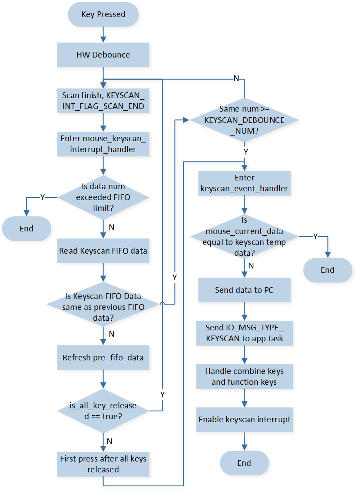
Scan End 中断相关处理
全部按键都被释放后会触发 KEYSCAN_INT_ALL_RELEASE 中断，将会进行按键释放处理并重新初始化 keyscan 模块。

All Release 中断相关处理
在被判断为有效按键之后，将通过 keyscan_event_handler() 进行处理。具体流程为：先把传入的按键值，与保存的按键值进行比较，若值相同则不作处理直接返回，避免了重复向对端发送键值；若与保存值不同，则向对端发送键值，同时会发消息到 app task 处理组合键和功能键等。
长按键保护
在 board.h 中宏 FEATURE_SUPPORT_KEY_LONG_PRESS_PROTECT 默认设置为 1，打开长按键保护功能。长按键保护的检测时间通过宏 LONG_PRESS_KEY_DETECT_TIMEOUT 进行修改，默认是 30 秒。
#define FEATURE_SUPPORT_KEY_LONG_PRESS_PROTECT 1 /* set 1 to stop scan when press one key too long */
#if FEATURE_SUPPORT_KEY_LONG_PRESS_PROTECT
#define LONG_PRESS_KEY_DETECT_TIMEOUT 30000 /* 30 sec */
#endif
打开长按键保护后，每次按键按下都会复位 long_press_key_detect_timer，当一个或多个按键按下并超过一定时间未释放时，会在 long_press_key_detect_timer_cb 中把 keyscan 各个行的管脚配置为 GPIO，并把中断方式设为高电平触发，有按键按下的行管脚将使能中断，此时可以进入 DLPS。
static void long_press_key_detect_timer_cb(TimerHandle_t p_timer)
{
APP_PRINT_INFO0("[long_press_key_detect_timer_cb] detect key long pressed event");
keyscan_global_data.is_key_long_pressed = true;
KeyScan_Cmd(KEYSCAN, DISABLE);
/* reset row pins for gpio config */
Pinmux_Config(KEYSCAN_ROW_0, DWGPIO);
Pinmux_Config(KEYSCAN_ROW_1, DWGPIO);
Pinmux_Config(KEYSCAN_ROW_2, DWGPIO);
RCC_PeriphClockCmd(APBPeriph_GPIOA, APBPeriph_GPIOA_CLOCK, ENABLE);
RCC_PeriphClockCmd(APBPeriph_GPIOB, APBPeriph_GPIOB_CLOCK, ENABLE);
GPIO_InitTypeDef GPIO_Param = {0};
GPIO_StructInit(&GPIO_Param);
GPIO_Param.GPIO_ITCmd = ENABLE;
GPIO_Param.GPIO_ITTrigger = GPIO_INT_TRIGGER_LEVEL;
GPIO_Param.GPIO_ITPolarity = GPIO_INT_POLARITY_ACTIVE_HIGH;
NVIC_InitTypeDef NVIC_InitStruct = {0};
NVIC_InitStruct.NVIC_IRQChannelPriority = 3;
NVIC_InitStruct.NVIC_IRQChannelCmd = ENABLE;
APP_PRINT_INFO1("long pressed keys are 0x%2X",
app_global_data.mouse_current_data.button);
uint8_t row_button_mask[KEYSCAN_ROW_SIZE] = {0};
for (uint8_t i = 0; i < KEYSCAN_ROW_SIZE; i++)
{
for (uint8_t j = 0; j < KEYSCAN_COLUMN_SIZE; j++)
{
row_button_mask[i] |= KEY_MAPPING_TABLE[i][j];
}
}
if (app_global_data.mouse_current_data.button & row_button_mask[0])
{
/* row 0 gpio */
GPIO_Param.GPIO_Pin = GPIO_GetPin(KEYSCAN_ROW_0);
GPIO_Init(GPIO_GetPort(KEYSCAN_ROW_0), &GPIO_Param);
/* row 0 nvic */
NVIC_InitStruct.NVIC_IRQChannel = KEYSCAN_ROW_0_IRQ;
NVIC_Init(&NVIC_InitStruct);
/* enable row 0 interrupt */
GPIO_ClearINTPendingBit(GPIO_GetPort(KEYSCAN_ROW_0), GPIO_GetPin(KEYSCAN_ROW_0));
GPIO_MaskINTConfig(GPIO_GetPort(KEYSCAN_ROW_0), GPIO_GetPin(KEYSCAN_ROW_0), DISABLE);
GPIO_INTConfig(GPIO_GetPort(KEYSCAN_ROW_0), GPIO_GetPin(KEYSCAN_ROW_0), ENABLE);
is_row_0_long_pressed = true;
}
......
当长按键全部被松开后，将触发 GPIO 中断，并把各管脚重新配置到 keyscan 模块并重新初始化。
void keyscan_row_0_int_handler(void)
{
GPIO_INTConfig(GPIO_GetPort(KEYSCAN_ROW_0), GPIO_GetPin(KEYSCAN_ROW_0), DISABLE);
GPIO_MaskINTConfig(GPIO_GetPort(KEYSCAN_ROW_0), GPIO_GetPin(KEYSCAN_ROW_0), ENABLE);
GPIO_ClearINTPendingBit(GPIO_GetPort(KEYSCAN_ROW_0), GPIO_GetPin(KEYSCAN_ROW_0));
APP_PRINT_INFO0("[keyscan_row_0_int_handler] long pressed row_0 keys release");
is_row_0_long_pressed = false;
if (is_row_1_long_pressed == false && is_row_2_long_pressed == false)
{
APP_PRINT_INFO0("[keyscan_row_0_int_handler] long pressed keys all release");
keyscan_global_data.is_key_long_pressed = false;
if (keyscan_global_data.is_all_key_released == false)
{
keyscan_global_data.is_all_key_released = true;
memset(&keyscan_global_data.cur_fifo_data, 0, sizeof(T_KEYSCAN_FIFO_DATA));
keyscan_event_handler(&keyscan_global_data.cur_fifo_data);
}
mouse_keyscan_init_data();
Pinmux_Config(KEYSCAN_ROW_0, KEY_ROW_0);
Pinmux_Config(KEYSCAN_ROW_1, KEY_ROW_1);
Pinmux_Config(KEYSCAN_ROW_2, KEY_ROW_2);
mouse_keyscan_module_init(KeyScan_Auto_Scan_Mode, ENABLE, KEYSCAN_DEBOUNCE, ENABLE,
KEYSCAN_INTERVAL);
}
}
DPI 按键处理
DPI 按键按下并释放后，会循环切换到下一档位的 DPI 设置并有灯效提示。
DPI 档位如下：
/* dpi range: 50~26000, corresponding to 0x0000--- 0x0207 */
#define DPI_LEVEL1 800 /* 800 dpi */
#define DPI_LEVEL2 1200 /* 1200 dpi */
#define DPI_LEVEL3 1600 /* 1600 dpi */
#define DPI_LEVEL4 3200 /* 3200 dpi */
#define DPI_LEVEL5 4800 /* 4800 dpi */
/* DEFAULT_DPI_LEVEL value is 1-6 */
#define DPI_INDEX_MIN 1
#define DPI_INDEX_MAX 5
#define DEFAULT_DPI_INDEX 2
DPI 按键处理如下：
static void mouse_dpi_key_release_event(void)
{
if (app_global_data.mode_type == USB_MODE ||
ppt_app_global_data.mouse_ppt_status == MOUSE_PPT_STATUS_CONNECTED ||
app_global_data.mouse_ble_status == MOUSE_BLE_STATUS_PAIRED)
{
#if PAW3395_SENSOR_EN
uint16_t dpi_value;
paw3395_global_data.dpi_level++;
if (paw3395_global_data.dpi_level > DPI_INDEX_MAX)
{
paw3395_global_data.dpi_level = DPI_INDEX_MIN;
}
dpi_value = paw3395_get_dpi_value_by_index(paw3395_global_data.dpi_level - 1);
paw3395_module_dpi_config(dpi_value, dpi_value);
if (ftl_save_to_module("app", &paw3395_global_data.dpi_level, FTL_DPI_OFFSET, FTL_DPI_LEN))
{
APP_PRINT_ERROR0("[mouse_dpi_key_release_event] ftl_save fail");
}
if (ppt_app_global_data.mouse_ppt_status == MOUSE_PPT_STATUS_CONNECTED)
{
app_ppt_send_dpi_data(SYNC_MSG_TYPE_DYNAMIC_RETRANS, 0);
}
#if SUPPORT_LED_INDICATION_FEATURE
dpi_led_indication(paw3395_global_data.dpi_level);
#endif
#endif
}
}
Report rate 组合键处理
BLE 模式下受限于 BLE connection interval，上报率固定在 125 Hz。2.4G 和 USB 模式下，长按 Report rate 组合键 中+前进+后退 3 秒，会循环切换到下一档位的上报率。
上报率档位：
#define USB_REPORT_RATE_LEVEL_0 1000
#define USB_REPORT_RATE_LEVEL_1 4000
#define USB_REPORT_RATE_LEVEL_2 8000
#define USB_REPORT_RATE_LEVEL_NUM 3
#define PPT_REPORT_RATE_LEVEL_0 1000
#define PPT_REPORT_RATE_LEVEL_1 2000
#define PPT_REPORT_RATE_LEVEL_2 4000
#define PPT_REPORT_RATE_LEVEL_NUM 3
#define USB_REPORT_RATE_DEFAULT_INDEX 2
#define PPT_REPORT_RATE_DEFAULT_INDEX 2
Report rate 按键处理可参考
mouse_report_rate_change_handle()。
滚轮
鼠标滚轮功能是基于 aon qdecoder（简称 QDEC）模块实现的，该模块在 DLPS 下可以正常工作，不会掉电。
QDEC 管脚配置
滚轮模块所使用的管脚在 board.h 中定义，默认如下：
#define QDEC_X_PHA_PIN P9_1
#define QDEC_X_PHB_PIN P9_0
备注
只有固定的几个管脚可以映射到滚轮模块使用，详情参考 datasheet。
QDEC 初始化
PAD 初始化：
void qdec_module_pad_config(void) { Pad_Config(QDEC_X_PHA_PIN, PAD_PINMUX_MODE, PAD_IS_PWRON, PAD_PULL_NONE, PAD_OUT_DISABLE, PAD_OUT_LOW); Pad_Config(QDEC_X_PHB_PIN, PAD_PINMUX_MODE, PAD_IS_PWRON, PAD_PULL_NONE, PAD_OUT_DISABLE, PAD_OUT_LOW); }
Pinmux 初始化：
void qdec_module_pinmux_config(void) { Pinmux_AON_Config(QDPH0_IN_P9_0_P9_1); }
滚轮模块初始化配置如下：
void qdec_cfg_init(uint32_t is_debounce, uint8_t phasea, uint8_t phaseb) { AON_QDEC_InitTypeDef qdecInitStruct = {0}; AON_QDEC_StructInit(&qdecInitStruct); qdecInitStruct.debounceTimeX = 20;/* uint 1/32 ms, recommended debounce time setting is between 600us and 1000us */ qdecInitStruct.axisConfigX = ENABLE; qdecInitStruct.debounceEnableX = is_debounce; qdecInitStruct.initPhaseX = (phasea << 1) | phaseb; qdecInitStruct.manualLoadInitPhase = ENABLE; qdecInitStruct.counterScaleX = CounterScale_2_Phase; AON_QDEC_Init(AON_QDEC, &qdecInitStruct); AON_QDEC_INTConfig(AON_QDEC, AON_QDEC_X_INT_NEW_DATA, ENABLE); AON_QDEC_INTConfig(AON_QDEC, AON_QDEC_X_INT_ILLEAGE, ENABLE); AON_QDEC_INTMask(AON_QDEC, AON_QDEC_X_INT_MASK, DISABLE); AON_QDEC_INTMask(AON_QDEC, AON_QDEC_X_CT_INT_MASK, DISABLE); AON_QDEC_INTMask(AON_QDEC, AON_QDEC_X_ILLEAGE_INT_MASK, DISABLE); AON_QDEC_Cmd(AON_QDEC, AON_QDEC_AXIS_X, ENABLE); GPIO_InitTypeDef GPIO_InitStruct = {0}; GPIO_StructInit(&GPIO_InitStruct); GPIO_InitStruct.GPIO_Pin = GPIO_GetPin(QDEC_X_PHA_PIN); GPIO_InitStruct.GPIO_Mode = GPIO_MODE_IN; GPIO_InitStruct.GPIO_ITCmd = DISABLE; GPIO_Init(GPIO_GetPort(QDEC_X_PHA_PIN), &GPIO_InitStruct); GPIO_InitStruct.GPIO_Pin = GPIO_GetPin(QDEC_X_PHB_PIN); GPIO_Init(GPIO_GetPort(QDEC_X_PHB_PIN), &GPIO_InitStruct); }
其中重要参数说明：
AON_QDEC_InitTypeDef::axisConfigX：QDEC 功能启用或禁用。AON_QDEC_InitTypeDef::debounceEnableX：debounce 使能，根据需要配置为 ENABLE 或 DISABLE。AON_QDEC_InitTypeDef::debounceTimeX：debounce 时间，单位为 1/32 ms，根据时间需求设置。AON_QDEC_InitTypeDef::initPhaseX：初始相位设置。AON_QDEC_InitTypeDef::manualLoadInitPhase：自动加载相位功能，需要设置为 ENABLE，每次产生中断后，会自动加载当前相位。AON_QDEC_InitTypeDef::counterScaleX：表示多少个相位变化会进行计数和产生中断，设置为 CounterScale_2_Phase。
NVIC 初始化如下：
void qdec_module_nvic_config(void) { NVIC_InitTypeDef nvic_init_struct = {0}; nvic_init_struct.NVIC_IRQChannel = AON_QDEC_IRQn; nvic_init_struct.NVIC_IRQChannelCmd = (FunctionalState)ENABLE; nvic_init_struct.NVIC_IRQChannelPriority = 3; NVIC_Init(&nvic_init_struct); }
取消初始化如下：
void qdec_module_deinit(void) { QDEC_DBG_BUFFER(MODULE_APP, LEVEL_INFO, "qdec deinit", 0); AON_QDEC_Cmd(AON_QDEC, AON_QDEC_AXIS_X, DISABLE); }
状态获取和数据发送
滚轮模块基于硬件的 AON QDEC（DLPS 下不掉电），通过 QDEC 两个管脚的相位变化（即电平变化）来获取滚轮的状态。配置了两种中断 AON_QDEC_FLAG_NEW_CT_STATUS_X 和 AON_QDEC_FLAG_ILLEGAL_STATUS_X，前者为滚轮模块正常检查到了 2 个相位的变化所触发的（比如相位依次变化：00 到 01/10 到 11），后者表示没有发现 2 个相位的依次变化，而是检查到了相位的突变（比如 00 到 11）。
在 QDEC 中断处理函数中，会先获取 QDEC 两个管脚当前的电平。根据两个管脚的电平判断当前滚轮是否滚动的一格；如果是从 DLPS 唤醒起来，也会根据 DLPS 唤醒管脚的情况来辅助判断。由于滚轮滚动半格再滚回原位，相位从 00 变化 01/10 变化回 00，也是变化了 2 个相位，也会触发 AON_QDEC_FLAG_NEW_CT_STATUS_X 中断，因此需要通过滚轮管脚的状态来判断滚轮的滚动状态。而后读取 QDEC 的滚动方向并进行数据处理，如果当前处于 USB 模式、2.4G 连接状态或 BLE 连接状态，会在中断处理函数中直接发送数据，保证实时性；否则就发送消息给 app task 处理，进行回连等操作。

QDEC 中断处理函数
光学传感器
本文以 SDK 中使用的 PAW3395 做为参考设计，开发者可按照产品需求选择适合的 Sensor。
传感器管脚配置
PAW3395 所使用的管脚在 board.h 中定义，包括 SPI 通信相关的管脚和表征 PAW3395 有无数据的 Motion Pin。
#define SENSOR_SPI_CLK P4_0
#define SENSOR_SPI_MISO P4_1
#define SENSOR_SPI_MOSI P4_2
#define SENSOR_SPI_NCS P4_3
#define SENSOR_SPI_NRESET P0_5
#define SENSOR_SPI_MOTION P0_6
#define SENSOR_MOTION_IRQ GPIOA6_IRQn
#define mouse_motion_pin_handler GPIOA6_Handler
传感器初始化
PAW3395 模块的初始化内容包括：PAD 和 Pinmux 初始化，SPI 初始化，PAW3395 初始化（DPI 等），Motion 检测初始化，上报率和采样定时器初始化。
PAD 和 Pinmux 初始化
PAD 初始化：
void paw3395_module_pad_config(void)
{
Pad_Config(SENSOR_SPI_CLK, PAD_PINMUX_MODE, PAD_IS_PWRON, PAD_PULL_NONE, PAD_OUT_ENABLE,
PAD_OUT_HIGH);
Pad_Config(SENSOR_SPI_MISO, PAD_PINMUX_MODE, PAD_IS_PWRON, PAD_PULL_NONE, PAD_OUT_ENABLE,
PAD_OUT_HIGH);
Pad_Config(SENSOR_SPI_MOSI, PAD_PINMUX_MODE, PAD_IS_PWRON, PAD_PULL_NONE, PAD_OUT_ENABLE,
PAD_OUT_HIGH);
Pad_Config(SENSOR_SPI_NCS, PAD_PINMUX_MODE, PAD_IS_PWRON, PAD_PULL_NONE, PAD_OUT_ENABLE,
PAD_OUT_HIGH);
Pad_Config(SENSOR_SPI_MOTION, PAD_PINMUX_MODE, PAD_IS_PWRON, PAD_PULL_NONE, PAD_OUT_DISABLE,
PAD_OUT_HIGH);
Pad_Config(SENSOR_SPI_NRESET, PAD_SW_MODE, PAD_IS_PWRON, PAD_PULL_UP, PAD_OUT_ENABLE,
PAD_OUT_HIGH);
}
Pinmux 初始化：
void paw3395_module_pinmux_config(void)
{
Pinmux_Deinit(SENSOR_SPI_CLK);
Pinmux_Deinit(SENSOR_SPI_MISO);
Pinmux_Deinit(SENSOR_SPI_MOSI);
Pinmux_Deinit(SENSOR_SPI_NCS);
Pinmux_Config(SENSOR_SPI_CLK, SPI0_CLK_MASTER);
Pinmux_Config(SENSOR_SPI_MISO, SPI0_MI_MASTER);
Pinmux_Config(SENSOR_SPI_MOSI, SPI0_MO_MASTER);
Pinmux_Config(SENSOR_SPI_NCS, DWGPIO);
Pinmux_Config(SENSOR_SPI_MOTION, DWGPIO);
}
SPI 初始化
SPI 初始化配置如下，其中 SPI Clock 设置为 10MHz。
void paw3395_module_master_spi_init(void)
{
RCC_PeriphClockCmd(APBPeriph_SPI0, APBPeriph_SPI0_CLOCK, ENABLE);
SPI_InitTypeDef SPI_InitStruct = {0};
SPI_StructInit(&SPI_InitStruct);
SPI_InitStruct.SPI_Direction = SPI_Direction_FullDuplex;
SPI_InitStruct.SPI_DataSize = SPI_DataSize_8b;
SPI_InitStruct.SPI_CPOL = SPI_CPOL_High;
SPI_InitStruct.SPI_CPHA = SPI_CPHA_2Edge;
SPI_InitStruct.SPI_BaudRatePrescaler = 4;
SPI_InitStruct.SPI_FrameFormat = SPI_Frame_Motorola;
SPI_Init(PAW3395_SPI, &SPI_InitStruct);
SPI_Cmd(PAW3395_SPI, ENABLE);
RCC_PeriphClockCmd(APBPeriph_GPIOA, APBPeriph_GPIOA_CLOCK, ENABLE);
RCC_PeriphClockCmd(APBPeriph_GPIOB, APBPeriph_GPIOB_CLOCK, ENABLE);
GPIO_InitTypeDef GPIO_InitStruct = {0};
GPIO_StructInit(&GPIO_InitStruct);
GPIO_InitStruct.GPIO_Pin = GPIO_GetPin(SENSOR_SPI_NCS);
GPIO_InitStruct.GPIO_Mode = GPIO_MODE_OUT;
GPIO_Init(GPIO_GetPort(SENSOR_SPI_NCS), &GPIO_InitStruct);
GPIO_SetBits(GPIO_GetPort(SENSOR_SPI_NCS), GPIO_GetPin(SENSOR_SPI_NCS));
}
PAW3395 初始化
PAW3395 初始化主要包括 DPI 初始化，XY 轴方向初始化，工作模式初始化。
DPI 初始化会从 flash 的 FTL 区域获取保存的 index 值，如果没有保存过，则设置为默认的 DPI index，并存储到 FTL 中。其中 FTL 区域详细说明请参考文档 Memory。
DPI 初始化代码如下：
void paw3395_dpi_init(void)
{
uint16_t x_axis_dpi = 0;
if (0 != ftl_load_from_module("app", &paw3395_global_data.dpi_level, FTL_DPI_OFFSET, FTL_DPI_LEN))
{
paw3395_global_data.dpi_level = DEFAULT_DPI_INDEX;
ftl_save_to_module("app", &paw3395_global_data.dpi_level, FTL_DPI_OFFSET, FTL_DPI_LEN);
}
else
{
if (paw3395_global_data.dpi_level < DPI_INDEX_MIN ||
paw3395_global_data.dpi_level > DPI_INDEX_MAX)
{
paw3395_global_data.dpi_level = DEFAULT_DPI_INDEX;
ftl_save_to_module("app", &paw3395_global_data.dpi_level, FTL_DPI_OFFSET, FTL_DPI_LEN);
}
}
x_axis_dpi = paw3395_get_dpi_value_by_index(paw3395_global_data.dpi_level - 1);
paw3395_module_dpi_config(x_axis_dpi, x_axis_dpi);
}
XY 轴方向初始化，是需要根据实际 sensor 物理摆放位置，调整 X 轴和 Y 轴的位置和方向：
/* set sensor axis control */
paw3395_write_reg(REG_AXIS_CONTROL, 0x40);
PAW3395 有多种工作模式，需要根据鼠标的传输模式和上报率进行选择。
Motion 检测初始化
Motion Pin 默认状态是高电平，当 PAW3395 有数据产生，Motion Pin 会变为低电平，通过设置 Motion Pin 的 GPIO 中断，来检测鼠标是否有移动：
void paw3395_module_motion_gpio_init(void)
{
RCC_PeriphClockCmd(APBPeriph_GPIOA, APBPeriph_GPIOA_CLOCK, ENABLE);
RCC_PeriphClockCmd(APBPeriph_GPIOB, APBPeriph_GPIOB_CLOCK, ENABLE);
GPIO_InitTypeDef GPIO_InitStruct = {0};
GPIO_StructInit(&GPIO_InitStruct);
GPIO_InitStruct.GPIO_Pin = GPIO_GetPin(SENSOR_SPI_MOTION);
GPIO_InitStruct.GPIO_ITCmd = ENABLE;
GPIO_InitStruct.GPIO_ITTrigger = GPIO_INT_TRIGGER_LEVEL;
GPIO_InitStruct.GPIO_ITPolarity = GPIO_INT_POLARITY_ACTIVE_LOW;
GPIO_Init(GPIO_GetPort(SENSOR_SPI_MOTION), &GPIO_InitStruct);
}
上报率和采样定时器初始化
鼠标 BLE 模式上报率固定为 125Hz，2.4G 和 USB 模式的上报率初始化会从 flash 的 FTL 区域获取保存的 Report rate index 值，如果没有保存过，则使用默认值，并存储到 FTL 区域中。上报率会根据 USB 的通信速率做限制，如 USB 模式如果使用了 Full speed，则上报率不能超过 1KHz，防止出现采样频率超过传输速率而导致丢包。上报率相关的初始化在 app_init_global_data() 中。
void app_init_global_data(void)
{
memset(&app_global_data, 0, sizeof(app_global_data));
app_global_data.mtu_size = 23;
app_global_data.max_report_rate_level = REPORT_RATE_LEVEL_8000_HZ;
if (0 != ftl_load_from_module("app", &app_global_data.usb_report_rate_index,
FTL_USB_REPORT_RATE_INDEX_OFFSET,
FTL_USB_REPORT_RATE_INDEX_LEN))
{
app_global_data.usb_report_rate_index = USB_REPORT_RATE_DEFAULT_INDEX;
ftl_save_to_module("app", &app_global_data.usb_report_rate_index, FTL_USB_REPORT_RATE_INDEX_OFFSET,
FTL_USB_REPORT_RATE_INDEX_LEN);
}
if (0 != ftl_load_from_module("app", &app_global_data.ppt_report_rate_index,
FTL_PPT_REPORT_RATE_INDEX_OFFSET,
FTL_PPT_REPORT_RATE_INDEX_LEN))
{
app_global_data.ppt_report_rate_index = PPT_REPORT_RATE_DEFAULT_INDEX;
ftl_save_to_module("app", &app_global_data.ppt_report_rate_index, FTL_PPT_REPORT_RATE_INDEX_OFFSET,
FTL_PPT_REPORT_RATE_INDEX_LEN);
}
}
Sensor 采样定时器会根据上报率来确定初始化参数：
if (app_global_data.mode_type == BLE_MODE)
{
paw3395_module_sample_timer_init(BLE_SAMPLE_PERIOD);
}
else if (app_global_data.mode_type == PPT_2_4G)
{
paw3395_global_data.sample_period = (SAMPLE_CLOCK_SOURCE / get_report_rate_level_by_index(PPT_2_4G,
app_global_data.ppt_report_rate_index, app_global_data.max_report_rate_level)) - 1;
paw3395_module_sample_timer_init(paw3395_global_data.sample_period);
}
else if (app_global_data.mode_type == USB_MODE)
{
paw3395_global_data.sample_period = (SAMPLE_CLOCK_SOURCE / get_report_rate_level_by_index(USB_MODE,
app_global_data.usb_report_rate_index, app_global_data.max_report_rate_level)) - 1;
paw3395_module_sample_timer_init(paw3395_global_data.sample_period);
}
移动触发和定时采样
鼠标系统初始化完成后，会将 Motion Pin GPIO 中断使能，当鼠标移动时会触发 Motion 中断，在中断处理函数 mouse_motion_pin_handler() 中会关闭 Motion 中，并打开 Sensor 采样定时器，根据初始化设置好的时间，定时触发定时器中断。在定时器中断处理函数 mouse_sample_hw_timer_handler() 中，获取 PAW3395 的相关寄存器的值（X,Y 等）。当有 XY 数据需要发送时，且处于 USB 模式、2.4G 连接状态或 BLE 配对状态时，会在中断处理函数中直接发送数据，保证实时性；否则发送消息给 app task 处理。为了避免 Motion 中断频繁触发，以及保证数据采样的及时性，如果没有 XY 数据需要发送，不会马上停止采样定时器，当持续一小段时间没有数据才停止定时器，重新使能 Motion 管脚的 GPIO 中断。
电量检测和充电
USB 插拔检测
USB_MODE_MONITOR 管脚默认是低电平，当 USB 插入后 USB_MODE_MONITOR 管脚会被拉高。通过检测 USB_MODE_MONITOR 管脚的电平来判断 USB 当前是插入还是拔出状态。USB_MODE_MONITOR 管脚配置为 GPIO，使能 GPIO 中断，当 USB_MODE_MONITOR 管脚的 GPIO 中断触发后，会打开软件定时器，反复检测若干次电平，来实现去抖动，以防止误判 USB 插拔状态，具体处理可参考 usb_mode_monitor_debounce_timeout_cb。
USB_MODE_MONITOR 管脚 GPIO 中断处理如下：
void usb_mode_monitor_int_handler(void)
{
APP_PRINT_INFO0("usb_mode_monitor_int_handler");
/* Mask GPIO interrupt */
GPIO_INTConfig(GPIO_GetPort(USB_MODE_MONITOR), GPIO_GetPin(USB_MODE_MONITOR), DISABLE);
GPIO_MaskINTConfig(GPIO_GetPort(USB_MODE_MONITOR), GPIO_GetPin(USB_MODE_MONITOR), ENABLE);
GPIO_ClearINTPendingBit(GPIO_GetPort(USB_MODE_MONITOR), GPIO_GetPin(USB_MODE_MONITOR));
if (os_timer_start(&usb_mode_monitor_debounce_timer) == false)
{
GPIO_ClearINTPendingBit(GPIO_GetPort(USB_MODE_MONITOR), GPIO_GetPin(USB_MODE_MONITOR));
GPIO_MaskINTConfig(GPIO_GetPort(USB_MODE_MONITOR), GPIO_GetPin(USB_MODE_MONITOR), DISABLE);
GPIO_INTConfig(GPIO_GetPort(USB_MODE_MONITOR), GPIO_GetPin(USB_MODE_MONITOR), ENABLE);
}
else if (usb_mode_monitor_trigger_level == GPIO_PIN_LEVEL_HIGH)
{
is_usb_in_debonce_check = true;
usb_in_debonce_timer_num = 0;
}
else
{
is_usb_out_debonce_check = true;
usb_out_debonce_timer_num = 0;
}
}
电池电量获取
电池电压会通过外部电路分压到 0.9V 以下，然后通过 ADC 进行采样。采样得到电压值后，通过换算得到电池电压和电量百分比。
{kind=link}
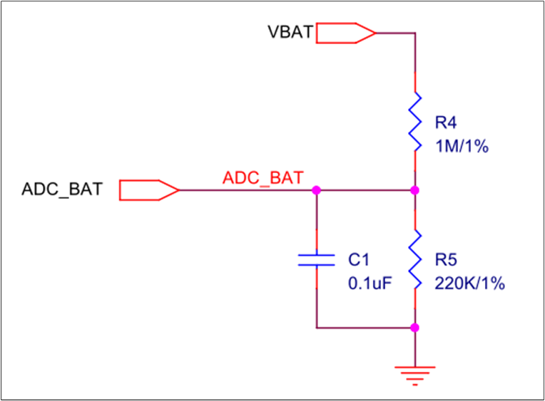
电池电压分压和 ADC 采样电路
ADC 管脚配置
ADC 采样所使用的管脚在 board.h 中定义，ADC 管脚只能使用 P2_0 ~ P2_7，对应 ADC0 ~ ADC7。
#define BAT_ADC_PIN ADC_5
#define ADC_SAMPLE_CHANNEL 5
ADC 初始化
ADC 配置为 bypass mode，使用 one shot 采样。
void bat_init_adc(void)
{
/* adc init */
Pad_Config(BAT_ADC_PIN, PAD_PINMUX_MODE, PAD_IS_PWRON, PAD_PULL_NONE, PAD_OUT_DISABLE,
PAD_OUT_LOW);
Pinmux_Config(BAT_ADC_PIN, IDLE_MODE);
ADC_DeInit(ADC);
RCC_PeriphClockCmd(APBPeriph_ADC, APBPeriph_ADC_CLOCK, ENABLE);
ADC_InitTypeDef adcInitStruct = {0};
ADC_StructInit(&adcInitStruct);
for (uint8_t index = 0; index < BAT_ADC_SAMPLE_CNT; index++)
{
adcInitStruct.ADC_SchIndex[index] = EXT_SINGLE_ENDED(ADC_SAMPLE_CHANNEL);
}
adcInitStruct.ADC_Bitmap = (1 << BAT_ADC_SAMPLE_CNT) - 1;
adcInitStruct.ADC_SampleTime = 14; /* sample time 1.5us */
ADC_Init(ADC, &adcInitStruct);
ADC_BypassCmd(ADC_SAMPLE_CHANNEL, ENABLE);
ADC_INTConfig(ADC, ADC_INT_ONE_SHOT_DONE, ENABLE);
}
电量获取和换算
宏定义 SUPPORT_BAT_PERIODIC_DETECT_FEATURE 设置为 1 后，会打开软件定时器 bat_detect_timer，定时进行 ADC 采样和换算获取电池电压，具体处理可参考 bat_detect_battery_mv()。
获得电池电压后，根据电池放电和充电的两个电压电量对应表 bat_vol_discharge_level_table[] 和 bat_vol_charge_level_table[]，查表得到电池电量，具体处理可参考 bat_calculate_bat_level()。
电量模式
鼠标的所有电量模式如下：
typedef enum
{
BAT_MODE_DEFAULT = 0, /* battery default mode */
BAT_MODE_NORMAL = 1, /* battery normal mode */
BAT_MODE_POWER_INDICATION = 2, /* battery power indication mode */
BAT_MODE_LOW_POWER = 3, /* battery low power mode */
BAT_MODE_FULL = 4, /* battery full */
} T_BAT_MODE;
电量模式进入退出说明：
BAT_MODE_DEFAULT：上电默认的模式，还没有进行过 ADC 采样，进行采样后变为其他模式。
BAT_MODE_POWER_INDICATION：电池电压低于阈值 BAT_ENTER_POWER_INDICATION_THRESHOLD，会进行 LED 闪烁提示，高于模式阈值退出该模式。
BAT_MODE_LOW_POWER：电池电压低于 BAT_ENTER_LOW_POWER_THRESHOLD，鼠标进入低电量模式，关闭按键、滚轮、移动和灯效等所有功能，直到电池电压升到超过阈值或者插入 USB 充电后退出该模式。
BAT_MODE_FULL：电池满电状态。
BAT_MODE_NORMAL：除了上述模式外的其他状态。
灯效
宏定义 SUPPORT_LED_INDICATION_FEATURE 设置为 1 时，打开 LED 功能。灯效控制有两种方式：
通过宏 LED_NUM_MAX 设置 LED 的总个数。
PAD 输出控制
宏 LED_GPIO_CTL_NUM 设置通过 PAD 输出控制的 LED 个数。RGB LED 的管脚配置如下：
#define LED1_R_PIN P3_2
#define LED1_G_PIN XO32K
#define LED1_B_PIN XI32K
static T_LED_PIN led_pin[LED_GPIO_CTL_NUM] =
{
{
.rgb_led_pin[0] = LED1_R_PIN,
.rgb_led_pin[1] = LED1_G_PIN,
.rgb_led_pin[2] = LED1_B_PIN
},
};
PAD 输出控制 LED 的原理如下：通过结构体 T_LED_EVENT_STG 记录每个 LED 闪烁事件的优先级，事件内循环次数，颜色，闪烁事件次数；通过 led_blink_start() 接口使能某个 LED 闪烁事件，并传入闪烁时间；通过 led_blink_exit() 接口停止某个 LED 闪烁事件；通过软件定时器 led_gpio_ctrl_timer，定时检查当前最高优先级的 LED 闪烁事件，当前时刻 LED 管脚所需要输出的电平，然后通过 PAD SW mode 设置正确的管脚电平。软件定时器 led_gpio_ctrl_timer 的超时时间为 LED_PERIOD，默认为 50ms，也就是每 50ms 检查和更改一次 LED 电平状态。
结构体 T_LED_EVENT_STG 如下：
typedef struct
{
uint8_t led_type_index;
uint8_t led_loop_cnt;
uint8_t led_color_mask_bit[3];
uint32_t led_bit_map;
} T_LED_EVENT_STG;
led_type_index：LED 闪烁事件编号，也表征事件优先级，0 为最高优先级，数值越大优先级越低。
led_loop_cnt：LED 闪烁事件内循环次数，LED 闪烁事件一次闪烁时间为软件定时器
led_gpio_ctrl_timer超时时间 LED_PERIOD 乘以 led_loop_cnt。程序中 LED_PERIOD 默认为 50ms，led_loop_cnt 默认设置为 20 次，也就是 LED 闪烁事件一次闪烁时间为 1s。led_color_mask_bit[3]：LED 颜色，可以配置为红，绿，蓝单一颜色或两两组合或三个组合。
led_bit_map：闪烁规律。在一次 LED 闪烁事件内，每个 bit 都表征一次软件定时器 callback 函数
led_gpio_ctrl_timer_cb调用时 LED 的亮灭状态。以第 n 个 bit 为例（用 bit(n) 表示），如果 bit(n) 为 1，表示一次 LED 闪烁事件内，第 n+1 次调用led_gpio_ctrl_timer_cb函数时，LED 需处于亮的状态；如果 bit(n) 为 0，则需要处于灭的状态。因为一次 LED 闪烁事件内只会调用 led_loop_cnt 次led_gpio_ctrl_timer_cb函数，因此只有 bit0 到 bit(led_loop_cnt-1) 的值是有效的。
程序中默认的 LED 事件以及相关的结构体参数在数组 led_event_arr[] 中配置。
当调用 LED_BLINK() 即 led_blink_start() 时，触发某个闪烁事件。接口如下：
T_LED_RET_CAUSE led_blink_start(uint16_t led_index, LED_TYPE type, uint8_t cnt);
#define LED_BLINK(led_index, type, n) led_blink_start(led_index, type, n)
参数说明如下：
led_index：LED Index，不能超过 LED_GPIO_CTL_NUM，程序默认只有一个 LED_1（值为 0）。
type：LED 闪烁事件。
n：LED 闪烁事件的执行次数，如果为 0 则表示无限次。
以 LED_BLINK(LED_1, LED_TYPE_BLINK_RESET, 2) 为例，表示 LED_1 执行闪烁事件 LED_TYPE_BLINK_RESET 2 次。该事件一次闪烁时间为 LED_PERIOD 乘以对应的 led_loop_cnt，为 1s，且该事件闪烁规律是一直保持常亮，因此就实现了 LED_1 常亮 2s 的灯效。
PWM 输出控制
PWM 输出是通过硬件定时器实现的，一路 PWM 就需要配置一个硬件定时器（包含普通的 HW Timer 和 Enhance Timer），因此一个 RGB 灯需要 3 个硬件定时器，目前程序使用的硬件定时器情况参考 硬件定时器，只有 7 个硬件定时器可以给 LED 模块使用。为了灯效变化的精准，还需要一个硬件定时器，定时检查是否需要改变灯效和 PWM 输出。因此只能使用 7 个硬件定时器，同时驱动 2 个 RGB LED。在 LED 亮度允许的情况下，也可以通过分时复用的方式，一个硬件定时器分时控制两个管脚输出 PWM，程序中并没有分时控制的实例，需要自行实现。
宏 LED_HW_TIM_PWM_CTL_NUM 设置通过 PWM 输出控制的 LED 个数。宏 LED_HW_TIM_PWM_CTL_INDEX 设置通过 PWM 输出控制的 LED 的起始 index。LED 的管脚和所使用的硬件定时器配置如下：
#define LED1_R_PIN P3_2
#define LED1_G_PIN XO32K
#define LED1_B_PIN XI32K
typedef struct
{
uint8_t pin_num;
uint8_t pin_func;
TIM_TypeDef *timer_type;
ENHTIM_TypeDef *entimer_type;
} T_LED_PWM_PARAM_DEF;
static const T_LED_PWM_PARAM_DEF led_pwm_list[3 * LED_HW_TIM_PWM_CTL_NUM] =
{
{LED2_R_PIN, TIMER_PWM2, TIM2, NULL },
{LED2_G_PIN, ENPWM2_P, NULL, ENH_TIM2},
{LED2_B_PIN, ENPWM3_P, NULL, ENH_TIM3},
};
PWM 输出控制 LED 的原理如下：通过结构体 T_PWM_LED_EVENT_STG 记录每个 LED 闪烁事件的优先级，事件内循环次数，闪烁规律；通过 led_hw_tim_pwm_blink_start() 接口使能某个 LED 闪烁事件，并传入闪烁事件次数；通过 led_hw_tim_pwm_blink_exit() 接口停止某个 LED 闪烁事件；通过硬件定时器 LED_CNT_TIM（默认设置的 TIM6），定时检查并输出当前最高优先级的 LED 闪烁事件，当前时刻 LED 管脚所需要输出的 PWM 波形。硬件定时器 LED_CNT_TIM 的超时时间为 LED_CNT_TIME_MS，默认为 2ms，也就是每 2ms 检查和更改一次 LED 管脚的 PWM 波形。
结构体 T_PWM_LED_EVENT_STG 如下：
typedef struct
{
uint8_t led_type_index;
uint32_t led_loop_num;
LED_EVENT_HANDLE_FUNC led_event_handle_func;
} T_PWM_LED_EVENT_STG;
led_type_index：LED 闪烁事件编号，也表征事件优先级，0 为最高优先级，数值越大优先级越低。
led_loop_num：LED 闪烁事件内循环次数，LED 闪烁事件一次闪烁时间为硬件定时器 LED_CNT_TIM 的超时时间为 LED_CNT_TIME_MS 乘以 led_loop_num。程序中 LED_CNT_TIME_MS 默认为 2ms，led_loop_num 默认设置为 500 次，也就是 LED 闪烁事件一次闪烁时间为 1s。
led_event_handle_func：闪烁规律的 callback 函数，返回当前时刻 LED 的 RGB 颜色亮度参数。每次硬件定时器 LED_CNT_TIM 超时后，会调用该 callback 获取当前时刻 LED 事件颜色亮度参数。
程序中默认的 LED 事件以及相关的结构体参数在数组 pwm_led_event_arr[] 中配置：
static T_PWM_LED_EVENT_STG pwm_led_event_arr[PWM_LED_TYPE_MAX] =
{
{PWM_LED_TYPE_IDLE, PWM_LED_LOOP_NUM_IDLE, NULL},
{PWM_LED_TYPE_BLINK_RESET, PWM_LED_LOOP_NUM_500_TIMES, led_reset_event_handler},
{PWM_LED_TYPE_BLINK_TEST, PWM_LED_LOOP_NUM_500_TIMES, led_test_event_handler},
{PWM_LED_TYPE_ON, PWM_LED_LOOP_NUM_500_TIMES, NULL},
};
当调用 PWM_LED_BLINK() 即 led_hw_tim_pwm_blink_start() 时，触发某个闪烁事件。接口如下：
void led_hw_tim_pwm_blink_start(uint16_t led_index, PWM_LED_TYPE type, uint32_t cnt);
#define PWM_LED_BLINK(led_index, type, cnt) led_hw_tim_pwm_blink_start(led_index, type, cnt)
参数说明如下：
led_index：LED Index，不能超过 LED_HW_TIM_PWM_CTL_INDEX + LED_HW_TIM_PWM_CTL_NUM。
type：LED 闪烁事件。
n：LED 闪烁事件的执行次数，如果为 0 则表示无限次。
看门狗
RTL87x2G 平台有两种看门狗，可以分别在 CPU active 和 DLPS 状态下工作，在 board.h 中设置 WATCH_DOG_ENABLE 为 1 时将看门狗都打开。通过宏定义 WATCH_DOG_TIMEOUT_MS 修改 watchdog timeout 时间（默认设置的是 5 秒），喂狗时间是（WATCH_DOG_TIMEOUT_MS - 1）秒，超过时间没有喂狗会自动重启。打开看门狗后，会开一个软件定时器，每隔一段时间（小于超时时间）定时喂狗。
可以调用接口 app_system_reset()，主动触发看门狗重启，可以配置重启的模式，包括 RESET_ALL 和 RESET_ALL_EXCEPT_AON。可以记录重启的原因，在 IC 重启上电后可以获取重启原因。用户可以添加新的原因至 T_SW_RESET_REASON 中。
DFU
本文中 DFU（Device Firmware Upgrade）是指设备的固件升级，基于 USB 来实现，需要将 board.h 中宏定义 FEATURE_SUPPORT_USB_DFU 置 1 来打开该功能。其流程是：
通过 MPPackTool 将想要升级的 image 进行打包；
通过 CFUDownloadTool 将打包的 image 内容通过 USB 传输给鼠标；
鼠标将需要升级的 image 存储到 IC 的 OTA Temp 区；
当数据传输完成并校验通过，会自动重启将 OTA Temp 区所有 image 搬运到 Flash 的运行区域，以实现固件升级。
DFU 支持一次打包并升级一个或多个 image，可以打包并升级以下 5 个 image：boot patch、system patch、host image、stack patch、app image。但一次打包的 image 大小总和（不包括 boot patch）不能超过 OTA Temp 区，以默认的 flash map 为例，app image 和 host image 都较大，不能一起打包，五份 image 需分为两个升级包。
DFU 数据传输完成后，需要把升级 image 从 OTA Temp 区搬运到 Flash 运行区，当该过程中断电重启后，会重新搬运，IC 不会变砖。
DFU 升级单独使用了一个 USB interface，基于 HID set/get report 来实现升级过程的数据交互，具体实现参考 usb_hid_interface_dfu.c/.h。
Tri-Mode Mouse application 遵循 CFU V1 升级协议，具体实现可参考 usb_dfu.c/.h。
RTL87x2G mouse DFU 升级，打包工具的使用可参考 MPPack Tool。升级时，只需要把设备通过 USB 接入电脑，升级工具的使用可参考 CFUDownloadTool。
低功耗
DLPS
DLPS 功能，是当 CPU 和外设不需要工作时，关闭相关模块电源，以达到省电的目的。在 board.h 中配置宏定义 DLPS_EN 为 1，打开 DLPS 功能。
宏定义 USE_USER_DEFINE_DLPS_EXIT_CB 和 USE_USER_DEFINE_DLPS_ENTER_CB 设置为 1，在退出 DLPS 和进入 DLPS 时调用 callback 进行应用需要的配置。
打开相关宏定义，在进入 DLPS 的时候会自动保存对应模块的寄存器，并在退出 DLPS 的时候恢复寄存器配置。以 GPIO 为例，将 USE_GPIOA_DLPS 和 USE_GPIOB_DLPS 配置为 1 后，会在进出 DLPG 时自动保存和恢复 GPIO 相关寄存器配置，这样退出 DLPS 时，不需要重新初始化 GPIO。
DLPS 更详细的说明，参考文档 低功耗模式。
进入 DLPS 前配置
由于进入 DLPS 后大多数外设会断电，有些外设对应的管脚有外围电路，需要配置相关管脚的电平防止外围电路漏电。 USE_USER_DEFINE_DLPS_ENTER_CB 设置为 1，注册了进入 DLPS 前调用的 app callback 函数 app_enter_dlps()，函数中会对各个模块的管脚进行 PAD 配置，将管脚 PAD 设置为 PAD_SW_MODE，配置为需要的输入输出模式和电平。有些功能的管脚需要能够唤醒系统退出 DLPS，比如按键功能，可以在进入 DLPS 前在 app callback 中，调用 System_WakeUpPinEnable() 使能对应管脚 PAD 唤醒 DLPS 的功能，可以配置唤醒电平极性和 debounce 时间。DLPS PAD 唤醒的 debounce 时间是所有管脚共用的，因此程序中并没有使能 PAD debounce，而是每个管脚唤醒后用对应模块自己的 debounce 或者 sw timer debounce。
进入 dlps 时调用的 app callback。
static void app_enter_dlps(void)
{
Pad_ClearAllWakeupINT();
System_WakeupDebounceStatus(0);
#if MOUSE_GPIO_BUTTON_EN
mouse_gpio_button_module_enter_dlps_config();
#elif MOUSE_KEYSCAN_EN
mouse_keyscan_module_enter_dlps_config();
#endif
#if AON_QDEC_EN
qdec_module_enter_dlps_config();
#endif
#if GPIO_QDEC_EN
gpio_qdec_module_enter_dlps_config();
#endif
#if PAW3395_SENSOR_EN
paw3395_module_enter_dlps_config();
#endif
#if MODE_MONITOR_EN
mode_monitor_module_enter_dlps_config();
#endif
#if SUPPORT_BAT_DETECT_FEATURE
bat_enter_dlps_config();
#endif
#if (WATCH_DOG_ENABLE == 1)
if (app_global_data.is_aon_wdg_enable == true)
{
AON_WDT_Start(AON_WDT, WATCH_DOG_TIMEOUT_MS, RESET_ALL_EXCEPT_AON);
}
#endif
}
退出 DLPS 后配置
退出 DLPS 后，需要将进入 DLPS 前所配置的管脚重新初始化。 USE_USER_DEFINE_DLPS_EXIT_CB 设置为 1，注册了退出 DLPS 后调用的 app callback 函数 app_exit_dlps()，函数中会对各个模块的管脚进行 PAD 配置，将管脚 PAD 设置为 pinmux mode，并且映射到对应的外设功能。
退出 dlps 时调用的 app callback。
static void app_exit_dlps(void)
{
#if MOUSE_GPIO_BUTTON_EN
mouse_gpio_button_module_exit_dlps_config();
#elif MOUSE_KEYSCAN_EN
mouse_keyscan_module_exit_dlps_config();
#endif
#if PAW3395_SENSOR_EN
paw3395_module_exit_dlps_config();
#endif
#if MODE_MONITOR_EN
mode_monitor_module_exit_dlps_config();
#endif
#if SUPPORT_BAT_DETECT_FEATURE
bat_exit_dlps_config();
#endif
#if GPIO_QDEC_EN
gpio_qdec_module_exit_dlps_config();
#endif
#if (WATCH_DOG_ENABLE == 1)
if (app_global_data.is_aon_wdg_enable == true)
{
AON_WDT_Disable(AON_WDT);
}
#endif
}
CPU WFI
当外设需要工作，比如鼠标一直移动时，是无法进入 DLPS 的，此时 CPU 可能不需要工作，可以进入 WFI 来省电。正常情况，CPU 进入 WFI 需要耗费一些检查的时间，为了降低功耗，可以在确定不能进入 DLPS 的场景下，调用接口 pm_no_check_status_before_enter_wfi()，使 CPU 能更快进入 WFI，但调用该接口后，无法再进入 DLPS；当需要进入 DLPS 时，需要调用 pm_check_status_before_enter_wfi_or_dlps()，而后可以正常进入 DLPS 和 CPU WFI。
程序中默认在以下几种情况下调用 pm_no_check_status_before_enter_wfi()。
鼠标移动，光学传感器定时采样时。
鼠标处于 USB 模式下，且 USB 不在 suspend 状态。
程序默认在以下几种情况下调用 pm_check_status_before_enter_wfi_or_dlps()。
鼠标停止移动，停止光学传感器定时采样时。
鼠标处于 USB 模式下，USB 进入 suspend 状态。
鼠标电量模式处于 BAT_MODE_LOW_POWER 时。
无操作断线和休眠
当宏定义 FEATURE_SUPPORT_NO_ACTION_DISCONN 设置为 1 时（默认为 1），打开无操作断线功能，鼠标处于 BLE 或 2.4G 模式下，不使用持续超过一定时间后，会主动断开连接来省电，此时按键、滚轮和移动鼠标均可以重新连接和使用。无操作断线时间可以通过宏定义 NO_ACTION_DISCON_TIMEOUT 修改，默认设置为 1 分钟。
当宏定义 FEATURE_SUPPORT_NO_ACTION_DISCONN 和 FEATURE_SUPPORT_NO_ACTION_SENSOR_SLEEP 都设置为 1 时（默认为 1），打开无操作断线功能的同时，也会打开无操作休眠的功能。鼠标处于 BLE 或 2.4G 模式下，且在断线状态，无操作超过一定时间，会将一些漏电的模块关闭，来进一步省电，此时只能通过有限的手段唤醒鼠标重新使用，默认是关闭了光学传感器，无法通过移动鼠标唤醒，只能通过按键和滚轮唤醒鼠标重新使用。无操作休眠时间可以通过宏定义 NO_ACTION_SENSOR_SLEEP_TIMEOUT 修改，默认设置为 1 分钟。
FTL
FTL 是提供给 BT stack 和 APP 用户读写 flash 上数据的抽象层，通过 FTL 接口可以通过逻辑地址直接读写 flash 上分配出 FTL 空间的数据，操作更为简便。对于鼠标应用而言，建议将小数据，或经常改写的数据存到 FTL 中，方便操作，且 FTL 操作不会有 erase flash 行为（erase flash 过程会屏蔽所有中断）。FTL 有两种版本，v1 和 v2，目前鼠标应用采用的是 v2 版本，详情请参考文档 Memory。
FTL 初始化
FTL v2 版本需要 app 进行 FTL 分模块初始化，SDK 中，app 只使用了一个模块，其在 main 函数中调用 ftl_init_module() 进行了初始化，最小单位设置为 4 byte，分配了 1016 byte。
FTL 初始化能分配的逻辑地址大小，取决于 flash map 中 FTL 物理地址区域的大小，其对应关系和调整的依据和方法，参考文档 Memory。
空间规划和调整
在 board.h 中有规划目前 app 所使用的 FTL 空间。其中前 16 byte 是留给 2.4G 保存配对信息用的，app 能使用的地址是 [16，1016]。SDK 中将 DPI，上报率，蓝牙的配对信息备份，蓝牙随机地址保存在 FTL 区域，用户可以自行调整现有数据的地址，或规划添加新数据，保证存储的数据不重叠即可。
垃圾回收
当 FTL 物理空间将要被写满时，会自动进行垃圾数据的回收，释放物理空间。进行垃圾回收的过程，会有 erase flash 行为，会屏蔽所有中断。为了尽可能避免垃圾回收对正常程序行为的影响，可以将宏 FEATURE_SUPPORT_APP_ACTIVE_FTL_GC 置 1，app 在鼠标不使用的时候主动进行垃圾回连，垃圾回收的触发变得可控。
主动触发垃圾回收的场景有：
BLE 模式下断线。
2.4G 模式下断线，且一段时间回连不上。
无操作主动断线后。
产测
产测模式的进入退出方式
通过 GPIO 触发进入
board.h 中宏 THE_WAY_TO_ENTER_MP_TEST_MODE 配置为 ENTER_MP_TEST_MODE_BY_GPIO_TRIGGER 时，上电检查 MP_TEST_PIN_1 和 MP_TEST_PIN_2 两个管脚电平，电平满足条件就进入产测模式。在 mp_test_mode_check_and_enter() 函数中调整进入产测模式的两个电平状态。
通过 USB 命令进入退出
board.h 中宏 THE_WAY_TO_ENTER_MP_TEST_MODE 配置为 ENTER_MP_TEST_MODE_BY_USB_CMD 时，可以通过 USB 命令来进入退出产测模式。已经默认实现的功能如下。
Set report 相关命令在 mp_test_set_report_handle() 函数中实现，实现方式分为通过 GAP 层和通过 HCI 层：
以下产测命令在通过 GAP 层或 HCI 层实现时一致：
进入产测模式：14(report ID) 56 43 54 65 73 74。
临时调频偏（不会保存，重启后恢复）：14(report ID) 56 43 58 74 61 6C 00 xtal_value。
将频偏值写入 config file 中：14(report ID) 56 43 58 74 61 6C 01 xtal_value。
重启回到正常模式：14(report ID) 56 43 52 65 73 65 74。
以下产测命令仅在通过 GAP 层实现时有效：
进入/退出 single tone 测试模式：14(report ID) 56 43 01 78 fc 04 on_off_state channel tx_power。
on_off_state：1 - 进入 single tone test mode，0 - 退出 single tone test mode。
channel：实际频点为 2402 + channel MHz。比如 2442Hz，channel 值应为 0x28。
tx_power：8: 4dbm, 0: 0dbm, -8(0xF8): -4dbm, -14(0xF2): -7dbm, -46(0xD2): -23dbm。
以下产测命令仅在通过 HCI 层实现时有效：
进入/退出 single tone 测试模式：14(report ID) 56 43 01 eb fc 06 05 07 on_off_state channel。
on_off_state、channel 和 GAP 层 single tone 命令的设定方式一致。
LE Transmitter Test：14(report ID) 56 43 01 34 20 04 channel test_data_len pkt_payload_type PHY。
channel = (freq-2402)/2。比如 2442Hz，channel 值应为 0x14。
test_data_len：取值范围为 0x0~0xFF。
pkt_payload_type：0x0 (PRBS9), 0x01 (11110000), 0x02 (10101010), 0x03 (PRBS15), 0x04 (All 1), 0x05 (All 0), 0x06 (00001111), 0x07 (01010101)。
PHY：0x01 (LE 1M PHY), 0x02 (LE 2M PHY), 0x03 (LE Coded PHY with S=8), 0x04 (LE Coded PHY with S=2)。
发出指令后，HCI 层会回复 response。如果 response 最后一个字节为 0x0，表示下指令 status 成功；如果为其他值，表示下指令 status 失败。
LE Receiver Test：14(report ID) 56 43 01 33 20 03 channel PHY 00。
PHY：0x01 (LE 1M PHY), 0x02 (LE 2M PHY), 0x03 (LE Coded PHY)。
channel 和 response status 同 LE Transmitter Test。
LE Test End：14(report ID) 56 43 01 1F 20 00。
LE Transmitter Test 和 LE Receiver Test 都会用到 end 命令以停止测试。
发出命令后，HCI 层也会发回 response：04 0E 06 02 1F 20 status rx_pkt_num_LOW rx_pkt_num_HIGH。其中, status 为 0x0 表示 success，其他值为 fail; 如果在进行 LE Receiver Test 时发出 end 命令，最后两个字节表示 Rx Receive Packets。
Get report 可以获取当前频偏值，在 mp_test_get_report_handle() 函数中实现：14 xi xo 00 00 ...(xi = xo = xtal_value)。
备注
以上所有产测命令都是十六进制。
Single tone 实现方式
通过 BLE GAP 层实现
board.h 中宏 MP_TEST_SINGLE_TONE_MODE 配置为 GAP_LAYER_SINGLE_TONE_INTERFACE 时，上电需要进行 BLE gap 初始化，在 gap ready 一段时间（100ms）后，才能调用接口 single_tone() 进入/退出 single tone test mode 以及配置 single tone 参数。推荐使用该方式，该方式在初始化完成后，app 层的调用非常简单。
通过 HCI 层实现
board.h 中宏 MP_TEST_SINGLE_TONE_MODE 配置为 HCI_LAYER_SINGLE_TONE_INTERFACE 时，上电不需要进行 BLE gap 初始化，直接通过 HCI 命令控制 single tone。但是初始化额外的 os task，以及注册一些 callback 对 event 进行操作。
快速配对模式
快速配对（以下简称快连）实现了产线上快速测试样机的无线功能，包括 BLE 和 2.4G。以下提供两种方案：
方案一（固定地址快连）：dongle 和鼠标使用固定地址生成配对信息后进行快速连接。
方案二（非固定地址快连）：鼠标端通过组合键触发 BLE/2.4G 广播（无需修改代码），dongle 处于非连接状态时，保持 2.4G/BLE 扫描，连接任意符合条件的鼠标。
固定地址快连
使用方案一时，鼠标端需要把 board.h 中的宏 FAST_PAIR_TEST_MODE 置 1，dongle 端需要把宏 FAST_PAIR_TEST_MODE 、宏 SUPPORT_SET_BOND_INFO_USED_BY_FAST_PAIR 都置 1。
2.4G 模式下，dongle 和鼠标都会预先设定地址并生成配对信息，当 rssi 强度大于 APP 设定的阈值时，两者才会成功连接，阈值可以通过宏 PPT_PAIR_RSSI_THRESHOLD 进行修改。公版 SDK 准备了 5 组配对地址，可供 5 条产线同时工作。鼠标通过不同的组合键可选择使用哪一组地址；而 dongle 可通过 set report 下 USB 指令选择地址，指令已在
mp_test_get_report_handle()函数中实现：14(report ID) 55 65 75 (bond_info_index)。BLE 模式使用 public 地址进行快连，流程与 2.4G 模式类似，区别在于:
连接条件：BLE 模式使用固定地址快连时无需判断 rssi 强度，但会判断扫描到的地址，通过回连流程实现快连功能。
如果宏 CLEAR_BOND_INFO_WHEN_FACTORY_TEST 置 1，当鼠标和 dongle 成功连接后，dongle 端会发出指令使鼠标清除配对信息。
dongle 同样可通过 set report 下 USB 指令选择配对地址，指令有所不同：14(report ID) 55 65 74 (bond_info_index)。
备注
在 BLE 模式下使用固定地址快连，会涉及修改 config 文件，必须确保电源稳定，否则会有概率变砖。
非固定地址快连
使用方案二时，鼠标按下组合键 左键+滚轮中键+右键 发 BLE/2.4G 广播（无需修改代码）。dongle 端需要把 board.h 中的宏 FAST_PAIR_TEST_MODE 置 1、宏 SUPPORT_SET_BOND_INFO_USED_BY_FAST_PAIR 设为 0，通过 set report 下 USB 指令进入快连模式，USB 指令与方案一相同。
2.4G 模式下，与常规配对流程一致，唯一区别是，当收到 SYNC_EVENT_CONNECT_LOST 超过 1s，dongle 会清除配对信息重新进入配对状态。
BLE 模式下，dongle 通过检查鼠标广播的内容和 rssi，可以连接任何符合要求的设备，并通过 HID 指令清除配对信息。rssi 阈值可以通过 dongle 端的宏 BLE_FAST_PAIR_RSSI_THRESHOLD 进行修改。如果用户需要适配不同的鼠标，dongle 端的广播过滤内容要和鼠标保持一致。